這份網站是把你那份 23 頁手寫工程數學講義（用手機掃成 PDF 的那份）一頁一頁拆開，從「這到底在幹嘛」講到「每一題的每一步」，一個例題都不跳過。
工程數學 · 手寫講義精讀
複數 → 向量 → 向量微積分（梯度／散度／旋度／三大定理）→ 線性代數（矩陣／行列式／反矩陣）。全部 23 頁、30 多個例題，每題都附「思路」。
整份 23 頁其實只做三件事：
- 把數字換一種寫法（複數的極式、直角座標換球座標）——換完之後乘法、開根號、積分都變簡單。
- 把「變化」變成運算子（梯度 $\nabla f$、散度 $\nabla\!\cdot\!\vec v$、旋度 $\nabla\!\times\!\vec v$）——然後用三大定理（格林、高斯、斯托克斯）把「很難算的積分」換成「很好算的積分」。
- 把很多條方程式寫成一個矩陣（$A\vec x=\vec B$）——用列運算、行列式、反矩陣把它解掉。
怎麼用這個網站（建議照這個順序）
- 先讀該章的核心觀念（綠框）：那是我用白話重寫的版本，比原稿好入口。
- 再看每個例題卡：題目 → 思路 → 計算 → 答案 → 提醒。思路那一欄最重要，它回答的是「為什麼第一步要這樣做」。
- 把例題自己動筆算一次，再對答案。看懂 ≠ 會算。
- 卡住了就點開下方的原稿對照縮圖（可點擊放大），看老師原本怎麼寫。
- 每章最後有馬上練，答案折在裡面，先寫完再打開。
- 想練英文：各章標題旁與 English 那一列的術語都能點開看中文意思，術語中英對照可以打字搜尋。
章節地圖（17 章 + 附錄）
- 原稿是上課邊聽邊寫的筆記，難免有小筆誤（例如 p.7 的 $|\vec a|$、p.18 電路那條方程式）。我在對應例題的「提醒」都會標出來並給正確版本，你照正確的算就好。
- 數學式如果太寬，手機上可以左右滑動（公式區塊本身可橫向滾動）。
- 右上角有「夜間」可以切深色模式，晚自習比較不刺眼。
01複數與四則運算原稿 p.1
這一章只做一件事：把「$\sqrt{-1}$ 這種不存在的東西」變成一套能像普通數字一樣加減乘除的新數系。
複數就是「二維的數字」：橫軸放實數，縱軸放「轉 90° 的方向」。$i$ 這個符號的意思就是「把箭頭轉 90°」，所以 $i^2=-1$ 其實是說「轉 180° 就變成反方向」。
在實數裡 $x^2+1=0$ 無解，因為任何實數平方都 $\ge 0$。於是我們直接規定有一個數 $i$ 滿足
$$i=\sqrt{-1}\quad\Longleftrightarrow\quad i^2=-1$$然後把所有 $x+iy$（$x,y$ 是實數）收集起來，就得到複數系。
- $z=x+iy$：$x$ 叫 實部 $\operatorname{Re}(z)$，$y$ 叫 虛部 $\operatorname{Im}(z)$。注意：$\operatorname{Im}(z)$ 是實數 $y$，不含 $i$。
- 若 $x=0$（$z=iy$），叫做純虛數。
- 畫在平面上：$x$ 軸擺實部、$y$ 軸擺虛部，這個平面叫複數平面。$z$ 就是一個點（也是一個從原點出發的箭頭）。
三個運算規則（全部來自 $i^2=-1$）
| 運算 | 做法 | 記憶點 |
|---|---|---|
| 加／減 | $(x_1+x_2)+i(y_1+y_2)$ | 實部管實部、虛部管虛部 |
| 乘 | 像多項式展開，遇到 $i^2$ 就換成 $-1$ | $(a+bi)(c+di)=(ac-bd)+(ad+bc)i$ |
| 除 | 分子分母同乘分母的共軛，把分母變實數 | $\dfrac{1}{a+bi}=\dfrac{a-bi}{a^2+b^2}$ |
思路
- 看到「求 Re、Im」不要算，直接讀係數：實部就是 $i$ 前面那個數、虛部是 $i$ 的係數。
- 加法就是兩個 $i$ 前面、兩個 $i$ 後面各自相加。
- 乘法不要背公式，照展開：每一項乘每一項，最後把 $i^2$ 換 $-1$。這樣才不會記錯公式。
計算
$-6i^2$ 是 $-6\times(-1)=+6$。這一步是複數乘法唯一的陷阱，每次都要停下來把 $i^2$ 變 $-1$。
思路
- 國中做 $\dfrac{1}{\sqrt2}$ 時，我們「分子分母同乘 $\sqrt2$」把根號趕到分子——這裡一模一樣，只是把 $\sqrt2$ 換成「分母的共軛」。
- 分母是 $9-2i$，它的共軛是 $9+2i$。為什麼乘共軛有效？因為 $(a-bi)(a+bi)=a^2+b^2$ 是實數，$i$ 被消掉了。
- 所以：分子分母同乘 $9+2i$，分母變成 $9^2+2^2=85$（實數），再把分子展開整理。
計算
分母的共軛是 $9\mathbf{+}2i$（只改中間的號）。很多人會誤乘成 $9-2i$ 或 $-9+2i$，那就白算了。
共軛複數（）
$z=x+iy$ 的共軛，就是把 $y$ 的號反過來：
$$\bar z=x-iy$$幾何上就是對實軸（$x$ 軸）鏡射。
它最大的用處是「把複數的實部／虛部榨出來」：
（原稿寫成 $\operatorname{Im}(z)=\frac{1}{2i}(z-\bar z)$，同樣的意思。）
思路
- 先寫共軛：$\bar z_1=4-3i$（實部不動、虛部變號）。
- 做 $z_1-\bar z_1$：實部被扣掉（$4-4=0$），只留下虛部——這就是為什麼這個式子能「萃取」虛部。
- 剩下 $6i$，再除以 $2i$：$i$ 會互相消掉，得到實數 $3$。
計算
共軛的運算性質（原稿右框、含 H.W.）
「$\,\overline{\ \ }\,$」可以自由進出加減乘除，只要記得除法是「分子共軛除以分母共軛」：
$$\overline{(z_1+z_2)}=\bar z_1+\bar z_2,\qquad \overline{(z_1-z_2)}=\bar z_1-\bar z_2$$ $$\overline{z_1z_2}=\bar z_1\,\bar z_2,\qquad \overline{\left(\frac{z_1}{z_2}\right)}=\frac{\bar z_1}{\bar z_2}$$反過來要小心：$\overline{z_1z_2}$ 可以拆開，但「取絕對值」$|z_1z_2|$ 也能拆成 $|z_1||z_2|$（第 3 章會用到）；而 $\operatorname{Re}(z_1z_2)\ne \operatorname{Re}(z_1)\operatorname{Re}(z_2)$、$\operatorname{Im}$ 也一樣不能拆。
原稿最上方的三個運算律（複數也適用）：交換律（commutative）：$z_1+z_2=z_2+z_1$；結合律（associative）：$(z_1+z_2)+z_3=z_1+(z_2+z_3)$；分配律（distributive）：$z_1(z_2+z_3)=z_1z_2+z_1z_3$。
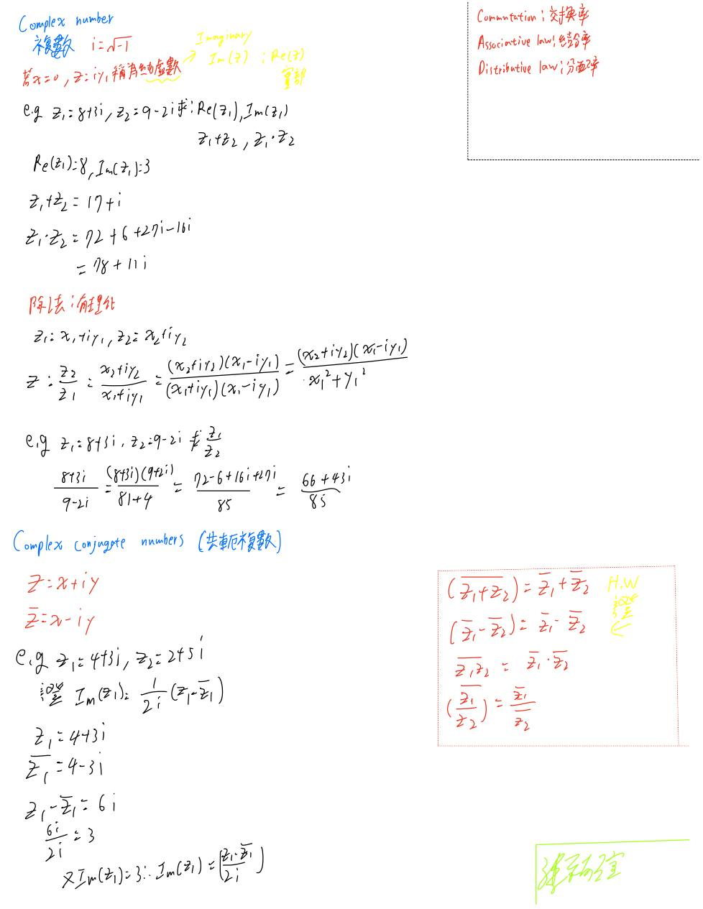
馬上練
1. 設 $z=5-2i$，求 $\operatorname{Re}(z)$、$\operatorname{Im}(z)$、$\bar z$、$z\bar z$。
$\operatorname{Re}(z)=5$、$\operatorname{Im}(z)=-2$（是 $-2$，不是 $2$）、$\bar z=5+2i$、$z\bar z=5^2+(-2)^2=29$。
2. 求 $\dfrac{1+i}{1-i}$。
分子分母同乘 $1+i$：$\dfrac{(1+i)^2}{(1-i)(1+i)}=\dfrac{1+2i+i^2}{1+1}=\dfrac{2i}{2}=i$。
3. 判斷：$\operatorname{Im}(2+3i)=3i$ 對嗎？
錯。$\operatorname{Im}$ 只取 $i$ 前面的實數係數，所以 $\operatorname{Im}(2+3i)=3$。
02極式與歐拉公式原稿 p.2
同樣一個複數，除了用「往右走 $x$、往上走 $y$」描述，也可以用「朝 $\theta$ 方向、走 $r$ 那麼遠」描述。後者讓乘法變成「長度相乘、角度相加」。
同一支箭有兩種講法：往右 3、往上 4（座標）；或「朝 53° 方向走 5 步」（極式）。極式最大的好處是乘法變成「長度相乘、角度相加」——工程上幾乎都用這個講法。
把 $z=x+iy$ 看成複數平面上的一點，連到原點。設箭頭長度 $r$、與正實軸夾角 $\theta$：
$$x=r\cos\theta,\qquad y=r\sin\theta$$ $$z=x+iy=r(\cos\theta+i\sin\theta)$$這叫 $z$ 的極式（polar form）。三個關鍵量：
- 模（絕對值）：$|z|=r=\sqrt{x^2+y^2}=\sqrt{z\cdot\bar z}$。
- 輻角 $\operatorname{Arg}z$：所有滿足上式的 $\theta$（無限多個，差 $2n\pi$）。
- 主值 $\arg z$：只取落在 $-\pi<\theta\le\pi$（原稿用的範圍）的那一個，寫成 $\operatorname{Arg}z$ 表示集合、$\arg z$ 表示單一代表值。
這是整份講義最重要的一行。它把「三角函數」跟「指數」接起來，所以極式的乘法才會有「角度相加」的漂亮性質。
怎麼算反應最快的 $\theta$
- 先算 $r=\sqrt{x^2+y^2}$（一定是正數）。
- 用 $\tan\theta=\dfrac{y}{x}$ 找出「參考角」，再看點在哪個象限決定 $\theta$ 要加多少。
- 四個軸上的點直接背，不要算：$1=1e^{i0}$、$i=1e^{i\pi/2}$、$-1=1e^{i\pi}$、$-i=1e^{i3\pi/2}$（原稿畫的那個十字就是這個）。
$z\ne0$ 時，$\operatorname{Arg}z=\arg z+2n\pi$，$n$ 為整數。原稿寫的 $\arg z=\frac{\pi}{4}+2n\pi$ 就是這個意思——只要題目問「arg」而非「Arg」，答案就要把 $+2n\pi$ 寫出來，因為「同一方向的點」有無限多個角度。
思路
- $x=1,\ y=1$，都在正的方向，所以這個點在第一象限（原稿把它畫成半徑 $\sqrt2$、$45^\circ$ 的箭頭）。
- 長度：$r=\sqrt{1^2+1^2}=\sqrt2$。
- 角度：$\tan\theta=\frac11=1$，且在第一象限，所以主值 $\theta=\frac{\pi}{4}$。若問 $\arg$，就寫 $\frac{\pi}{4}+2n\pi$。
- 最後把 $r$ 提出來：$\sqrt2\left(\frac{1}{\sqrt2}+\frac{1}{\sqrt2}i\right)=\sqrt2(\cos\frac{\pi}{4}+i\sin\frac{\pi}{4})=\sqrt2\,e^{i\pi/4}$。
「提出 $r$」那一步最容易漏：$1+i$ 不是 $\cos\frac\pi4+i\sin\frac\pi4$（那是 $|z|=1$），必須乘上 $\sqrt2$。檢查方法：把答案還原回直角座標，看是不是 $1+i$。
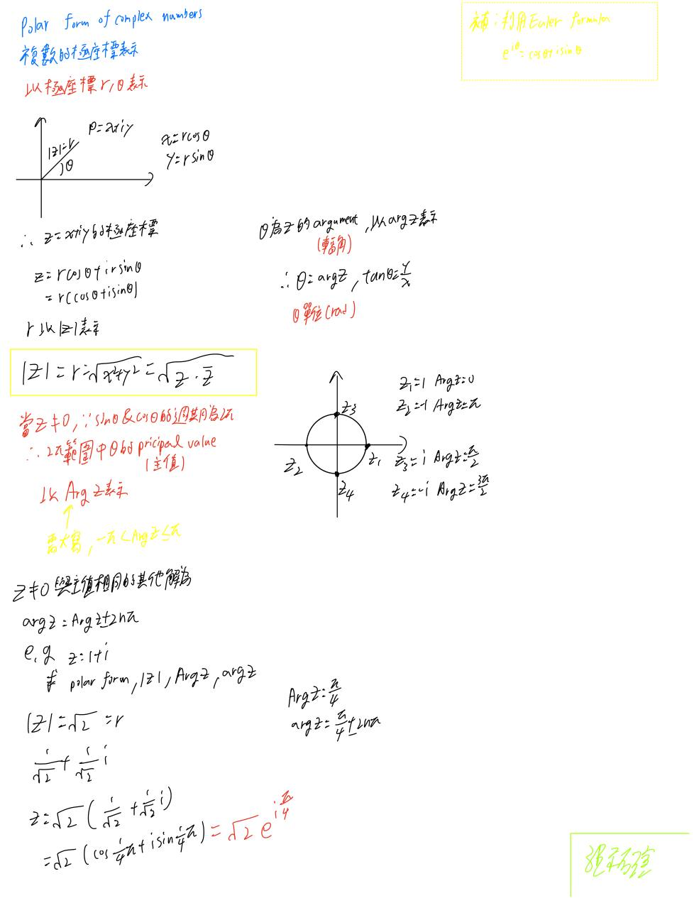
馬上練
1. 寫出 $z=-1+\sqrt3\,i$ 的 $|z|$ 與主值輻角。
$r=\sqrt{1+3}=2$；點在第二象限，$\tan$ 參考角 $=\frac{\pi}{3}$，故 $\arg z=\pi-\frac{\pi}{3}=\frac{2\pi}{3}$。所以 $z=2e^{i2\pi/3}$。
2. $z=i$ 的極式？
$r=1$、角度 $\frac\pi2$，所以 $i=e^{i\pi/2}$。（原稿十字圖上那四點就是這個。）
03極式的乘除 · · 方根原稿 p.3
換成極式之後，「乘法變角度相加」，於是「$n$ 次方變角度乘 $n$」，而「開 $n$ 次方」就是在圓上把角度等分 $n$ 份——這是這一章的主線。
次方是「把角度放大 $n$ 倍」，開 $n$ 次方就是「把角度縮小 $n$ 倍」。但繞圈也要算進去，所以才會生出 $n$ 個答案，而且它們在圓上等分——這就是原稿那張圓圖。
棣美弗定理（De Moivre）：令 $z_1=z_2=\dots=z$ 就得到
$$z^n=r^n\big[\cos(n\theta)+i\sin(n\theta)\big]=r^n e^{in\theta}$$而模也跟著相乘：$|z_1z_2|=|z_1||z_2|$。
為什麼？ 原稿把那串乘法展開給你看：$r_1r_2$ 提出來之後，剩下的是 $\cos\theta_1\cos\theta_2$ 那一坨。用高中的和角公式就能收成 $\cos(\theta_1+\theta_2)$、$\sin(\theta_1+\theta_2)$。所以「極式乘法＝長度相乘、角度相加」不是巧合，是和角公式。
方根（Root）：$n$ 個答案，不是一個
設 $z^{n}=w$。寫 $z=r(\cos\theta+i\sin\theta)$、$w=R(\cos\phi+i\sin\phi)$。由棣美弗：
$$r^n=R\ \Rightarrow\ r=\sqrt[n]{R},\qquad n\theta=\phi+2k\pi\ \Rightarrow\ \theta=\frac{\phi}{n}+\frac{2k\pi}{n}$$ $$\boxed{\ \sqrt[n]{w}=\sqrt[n]{R}\left[\cos\frac{\phi+2k\pi}{n}+i\sin\frac{\phi+2k\pi}{n}\right],\qquad k=0,1,\dots,n-1\ }$$- 因為角度是「差 $2\pi$ 都一樣」，所以只有 $n$ 個相異解（$k$ 到 $n-1$ 就循環了）。
- 幾何意義（原稿那張圓）：$n$ 個解全部落在半徑 $\sqrt[n]{R}$ 的圓上，彼此角度差 $2\pi/n$，把它們連起來就是正 $n$ 邊形。
- 原稿另外寫「令一個 $w$ 得一個 $z$；令一個 $z$ 得 $n$ 個 $w$」——就是說 $z^n$ 是單向的、開根號是多值的。
思路
- 把 $1$ 寫成極式：$1=1\cdot(\cos 0+i\sin 0)$，所以 $R=1,\phi=0$。
- 代公式：$r=\sqrt[3]{1}=1$，角度 $=\dfrac{0+2k\pi}{3}$，$k=0,1,2$。
- $k=0$：角度 $0$ → $1$；$k=1$：角度 $\frac{2\pi}{3}=120^\circ$；$k=2$：角度 $\frac{4\pi}{3}=240^\circ$。
- 這三個點在單位圓上剛好把圓三等分，連起來是正三角形。
「$1$ 的立方根只有 $1$」是國中答案；在複數裡有 3 個。同理 $\sqrt{4}$ 在複數系有 2 個解（$\pm2$）、$\sqrt[4]{1}$ 有 4 個解。
思路
- (a) 先把 $i$ 寫成極式：$i=1\cdot e^{i\pi/2}$（長度 1、角度 $90^\circ$）。
- 開平方＝長度開平方、角度除以 2 但要考慮繞圈：$\theta=\dfrac{\pi/2+2k\pi}{2}=\dfrac{\pi}{4}+k\pi$，$k=0,1$。
（也就是原稿寫的 $i^{1/2}$：$k=0$ 得 $45^\circ$、$k=1$ 得 $225^\circ$——兩個方向剛好相反。） - 所以答案是 $\cos\frac{\pi}{4}+i\sin\frac{\pi}{4}=\frac{\sqrt2}{2}+\frac{\sqrt2}{2}i$，以及它的相反數 $-\frac{\sqrt2}{2}-\frac{\sqrt2}{2}i$。
- (b) 一樣的代公式，只是 $n=5$、$\phi=0$：角度 $\frac{2k\pi}{5}$，$k=0,1,2,3,4$（五個點把圓五等分）。
開 $n$ 次方的角度要用 $\dfrac{\theta+2k\pi}{n}$，不是 $\dfrac{\theta}{n}+2k\pi$。前者才會生出 $n$ 個落在正確位置上的解。
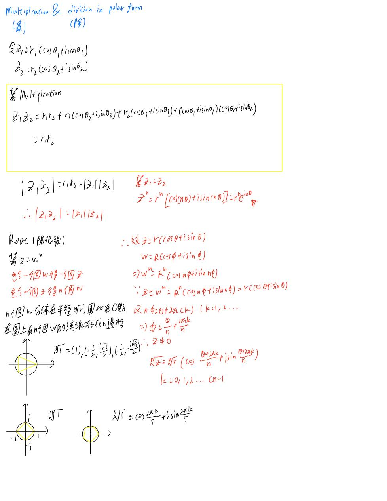
馬上練
1. 用極式算 $(1+i)^8$。
$1+i=\sqrt2 e^{i\pi/4}$ ⇒ $(1+i)^8=(\sqrt2)^8e^{i2\pi}=16\cdot1=16$。（直接硬乘會很痛苦。）
2. $\sqrt[4]{1}$ 的四個解是什麼？
角度 $0,\frac\pi2,\pi,\frac{3\pi}{2}$ ⇒ $1,\ i,\ -1,\ -i$（單位圓上四個軸點，正四邊形）。
3. 判斷：$|z_1+z_2|=|z_1|+|z_2|$ 嗎？
一般不對（會變成三角形兩邊之和 $=$ 第三邊）。只有同方向時等號成立；但 $|z_1z_2|=|z_1||z_2|$ 永遠成立——差別在乘法和加法。
04複變函數 $w=f(z)$原稿 p.4 上半
把上一章的複數當成「輸入」，餵進一個規則，吐出來的也是複數。這一節只是把這件事寫清楚，並示範怎麼把它拆成「兩條實函數」。
複變函數把兩張平面疊在一起：輸入平面的每一點 $z$，被規則搬到輸出平面的 $w$。拆成 $u$、$v$ 只是說「橫向座標與縱向座標各自怎麼被搬」。
複變函數 $w=f(z)$：定義域在複數上，每個 $z$ 對到一個 $w$。其中
- $z$ 叫 complex variable（複變數）；
- $w$ 是 $z$ 的函數值，寫成 $w=u+iv$；
- 因為 $z=x+iy$，所以 $u$、$v$ 都只跟 $x,y$ 有關：
白話版：一個複變函數 = 兩個實變函數（實部、虛部）綁在一起。這個「拆成 $u,v$」的動作，後面判別可微分（柯西—黎曼方程）全靠它。
思路
這題有兩條路，原稿兩條都走了，考試時挑快的用：
- 路 A（先拆 $u,v$）：把 $z=x+iy$ 代進去展開，實部的部分收集成 $u$、虛部的部分收集成 $v$。題目若問「$u,v$ 分別是什麼」就得走這條。
- 路 B（直接代值）：只要求 $f(1+3i)$ 的話，直接把 $z=1+3i$ 丟進去算複數乘法更快。
- 展開時記得：$(x+iy)^2=x^2+2xy\,i+i^2y^2=x^2-y^2+2xy\,i$，那個 $-y^2$ 是 $i^2$ 換來的，最容易漏。
計算
路 B：
$$f(1+3i)=(1+3i)^2+3(1+3i)=(-8+6i)+(3+9i)=-5+15i$$原稿在這個例題把 $(1+3i)^2$ 的實部算成 $1-9+9$，得到 $1+15i$。正確是 $1-9+3=-5$。驗證：把 $(x,y)=(1,3)$ 代回上面剛求出的 $u=x^2-y^2+3x$ ⇒ $1-9+3=-5$ ✓、$v=2(1)(3)+3(3)=15$ ✓。兩條路對得起來，所以答案 $-5+15i$ 才對。
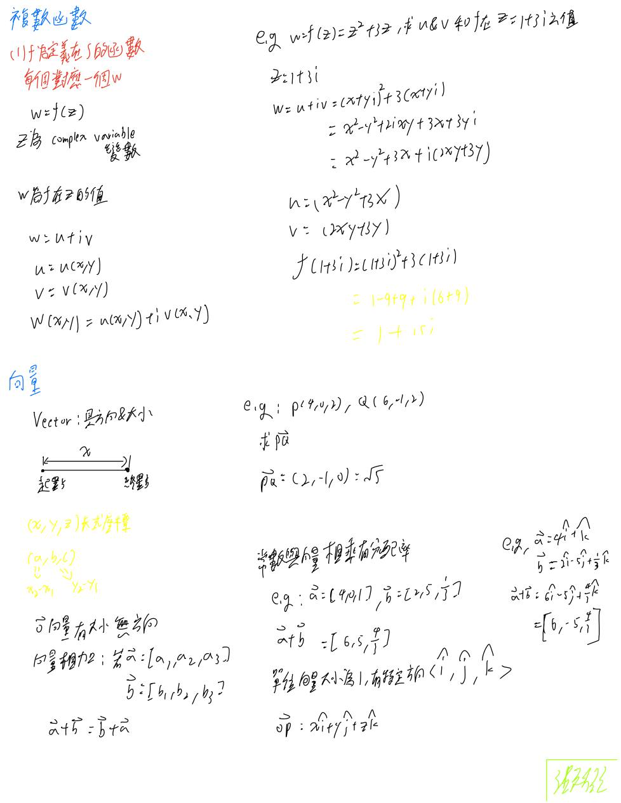
05向量的運算原稿 p.4 下半 – p.6
向量＝有方向、有大小的一支箭。這一章的三個主角：加減法、內積（問「夾角／投影」）、外積（問「垂直方向／面積」）。
內積問「兩支箭有多像」：同向是正、垂直是 0、反向是負。外積問「兩支箭張出多大的面積、往哪邊垂直」——右手指頭一比就知道方向。
- 向量寫成 $\vec a=[a_1,a_2,a_3]=a_1\hat i+a_2\hat j+a_3\hat k$；$\hat i,\hat j,\hat k$ 是三個座標軸的單位向量（長度 1、互相垂直）。
- 「大小為 1、方向為 $\vec p$ 方向」的向量寫成 $\hat p=\dfrac{1}{|\vec p|}\vec p$（後面求法向量、方向導數都靠它）。
- 零向量的長度是 0，沒有方向。
- 兩向量「相同」＝ 每個分量都相同（$\vec a=\vec b\iff a_1=b_1,\ a_2=b_2,\ a_3=b_3$）。
- 向量加法服從交換律：$\vec a+\vec b=\vec b+\vec a$。
思路
- 「從 $P$ 指向 $Q$ 的向量」＝ 終點減起點：$\overrightarrow{PQ}=Q-P$。順序反了答案就整條變號（變 $\overrightarrow{QP}$）。
- 減法是逐分量減：$(6-4,\,-1-0,\,2-2)$。
- 長度＝三軸平方和再開根號（三維的畢氏定理）。
(b) $\vec a=4\hat i+\hat j+\hat k$、$\vec b=2\hat i-5\hat j+\tfrac13\hat k$，求 $\vec a+\vec b$。
思路
- 兩種寫法其實是同一件事：$[a_1,a_2,a_3]$ 只是把 $\hat i\hat j\hat k$ 的係數排成一列。所以對應位置相加就好。
- (a) 第三分量 $1+\frac13=\frac43$。
- (b) 第二分量 $1+(-5)=-4$，第三分量 $1+\frac13=\frac43$。（原稿把第二分量寫成 $-5$，是手算漏加。）
內積（）：拿來問「夾角」與「投影」
- 結果是一個數（純量），不是向量。
- 反推夾角：$\cos\theta=\dfrac{\vec a\cdot\vec b}{|\vec a||\vec b|}$。
- $\vec a\cdot\vec b=0\iff$ 兩向量垂直（正交）——這是內積最常考的一句話。
- 幾何意義：$\vec a\cdot\vec b=|\vec a|\times\big(\vec b$ 在 $\vec a$ 方向上的投影長$\big)$。
思路
- 內積：對應分量相乘再相加。
- 模：各自平方和開根號。
- 夾角：套 $\cos\theta=\dfrac{\vec a\cdot\vec b}{|\vec a||\vec b|}$，最後用計算機取 $\cos^{-1}$。若題目只問「是否垂直」，只要看內積是不是 0。
內積算出來是負的時不要慌：負的代表夾角鈍角（$>90^\circ$）。內積的正負就是夾角的「感覺」——正：銳角；0：垂直；負：鈍角。原稿右下角「內積為 $0$ ⇒ 正交（垂直）」就是這個。
外積（）：拿來問「垂直方向」與「面積」
兩個不平行向量可以張出一個平面，外積給出垂直那個平面的向量：
$$\vec v=\vec a\times\vec b=\begin{vmatrix}\hat i&\hat j&\hat k\\ a_1&a_2&a_3\\ b_1&b_2&b_3\end{vmatrix} =\hat i\begin{vmatrix}a_2&a_3\\ b_2&b_3\end{vmatrix}-\hat j\begin{vmatrix}a_1&a_3\\ b_1&b_3\end{vmatrix}+\hat k\begin{vmatrix}a_1&a_2\\ b_1&b_2\end{vmatrix}$$ $$|\vec v|=|\vec a||\vec b|\sin\theta\quad(\text{＝兩向量張出的平行四邊形面積})$$- 只有三維才有外積。
- $\vec a\times\vec b$ 垂直於 $\vec a$ 也垂直於 $\vec b$（「兩者皆垂」的英文就是垂直的判準）。
- 方向性：$\vec a\times\vec b=-(\vec b\times\vec a)$，方向用右手定則（食指 $\vec a$、中指 $\vec b$、拇指就是 $\vec a\times\vec b$）。特別注意 $\hat i\times\hat j=\hat k$，順序反了變 $-\hat k$。
- $\vec a\times\vec a=0$（自己跟自己不行）。
思路
- 照定義排成 3×3 行列式：第一列是 $\hat i\hat j\hat k$，第二列放 $\vec a$、第三列放 $\vec b$。
- 用餘因子展開：$\hat i\times(1\cdot0-0\cdot0)-\hat j\times(1\cdot0-0\cdot3)+\hat k\times(1\cdot0-1\cdot3)$。注意中間 $\hat j$ 前面是減號。
- 算完每一項都是 $0$ 或 $0$，只有 $\hat k$ 那項是 $-3$。
- 檢查：$\vec v=(0,0,-3)$ 是否同時垂直 $\vec a$ 與 $\vec b$？$\vec v\cdot\vec a=0$ ✓、$\vec v\cdot\vec b=0$ ✓。合格。
向量函數、極限、導數（原稿 p.6）
向量函數就是「每個分量各自是一個（純量）函數」：
$$\vec v=\vec v(p)=[\,v_1(p),\ v_2(p),\ v_3(p)\,]$$所有操作都可以「逐分量」做：
- 極限：$\displaystyle\lim_{p\to p_0}\vec v(p)=\vec L\iff\lim_{p\to p_0}|\vec v(p)-\vec L|=0$（長度趨近 0 就是整支向量趨近 0）。
- 連續：$\displaystyle\lim_{p\to p_0}\vec v(p)=\vec v(p_0)$。
- 微分：$\dfrac{d\vec v}{dt}=\displaystyle\lim_{\Delta t\to0}\dfrac{\vec v(t+\Delta t)-\vec v(t)}{\Delta t}$，寫成分量就是
把曲線上的點寫成位置向量 $\vec r(t)=[x(t),y(t),z(t)]$，則導數 $\vec r'(t)$ 就是切向量（方向＝曲線前進方向、大小＝速率）。把速率對時間積分，就是走過的長度：
$$L=\int_a^b\sqrt{\vec r'\cdot\vec r'}\ dt=\int_a^b|\vec r'(t)|\,dt$$為什麼是 $\sqrt{\vec r'\cdot\vec r'}$？ 因為 $\vec r'\cdot\vec r'=|\vec r'|^2$，寫成根號只是讓你自己記得「取大小」。小段長度 $ds=|\vec r'|dt$，全部加起來就是弧長。
曲線 $\vec r(t)=[t,t,t]$，$0\le t\le2$（就是例題 16 那條走道），求弧長。
思路：先微分 $\vec r'=[1,1,1]$，再取大小 $|\vec r'|=\sqrt3$（常數，所以積分很簡單），最後 $\int_0^2\sqrt3\,dt=2\sqrt3$。
結果 $L=2\sqrt3\approx3.46$。這條線從 $(0,0,0)$ 走到 $(2,2,2)$，走直線的距離正是 $\sqrt{2^2+2^2+2^2}=2\sqrt3$ ✓。
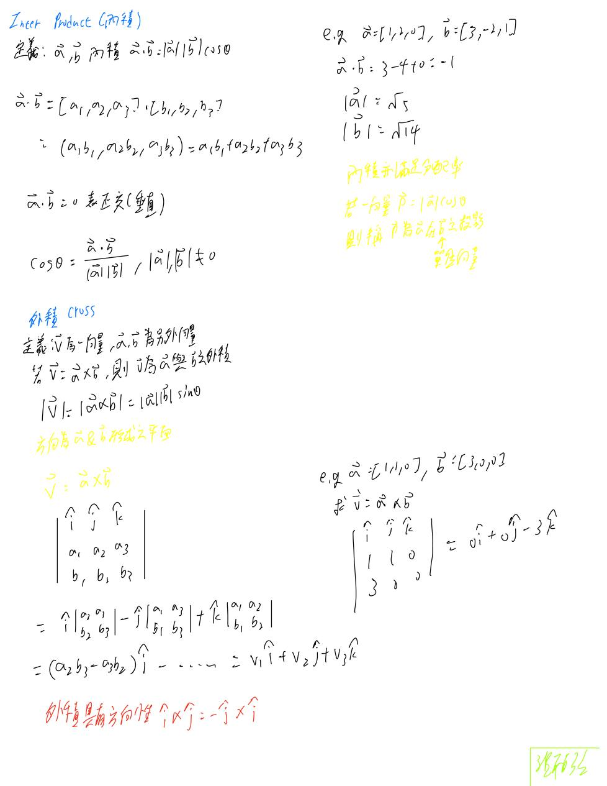
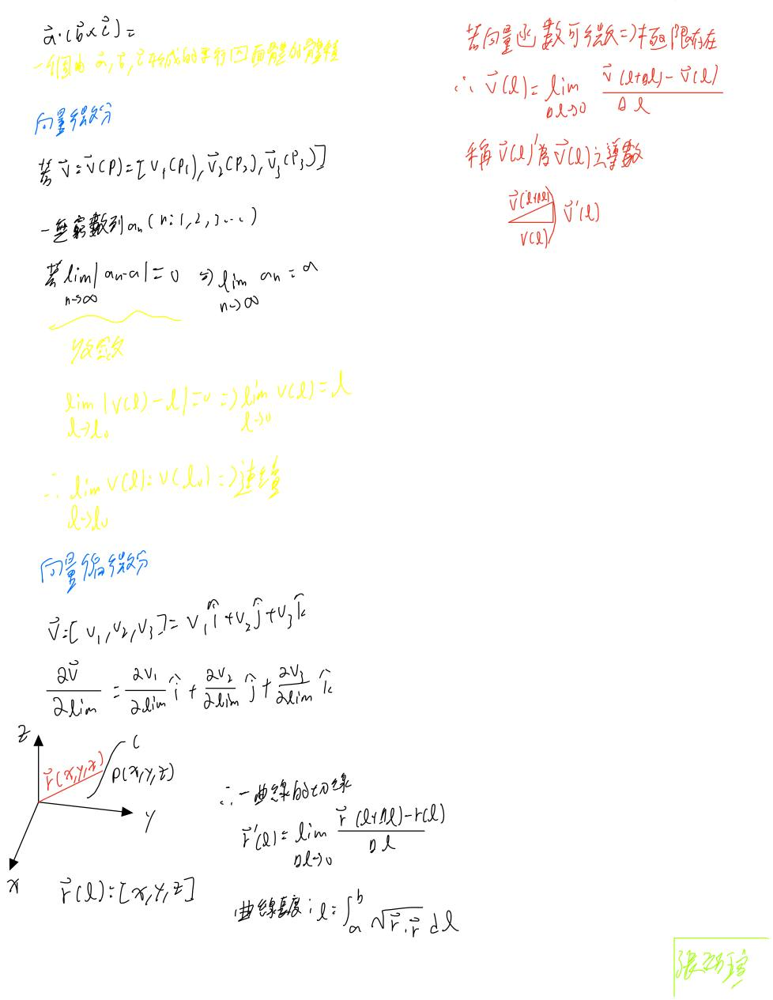
馬上練
1. $\vec a=[1,2,3]$、$\vec b=[2,-1,0]$ 是否垂直？
$\vec a\cdot\vec b=2-2+0=0$ ⇒ 垂直 ✓
2. 用外積求 $\vec a=[1,0,0]$、$\vec b=[0,1,0]$ 的面積。
$\vec a\times\vec b=\hat k$，$|\vec a\times\vec b|=1$ ⇒ 面積 1（單位正方形）✓
3. $\vec r(t)=[\cos t,\sin t,0]$（單位圓），$0\le t\le2\pi$，弧長？
$\vec r'=[-\sin t,\cos t,0]$，$|\vec r'|=\sqrt{\sin^2t+\cos^2t}=1$，所以 $L=\int_0^{2\pi}1\,dt=2\pi$ ✓（周長 $2\pi r$）。
06梯度與方向導數原稿 p.7
前面在講「一支箭（向量）」。從這裡開始我們的函數有三個輸入 $f(x,y,z)$（叫純量場，例如房間裡每一點的温度）。這一章要問：「往哪個方向走，温度上升最快？」
把函數想成一座山的高度 $f$：梯度告訴你「往哪走最陡、坡度多少」；方向導數則是「你硬往某個方向走，坡度是多少」。山壁上等高線的垂直方向，就是梯度的方向。
其中 $\nabla=\dfrac{\partial}{\partial x}\hat i+\dfrac{\partial}{\partial y}\hat j+\dfrac{\partial}{\partial z}\hat k$ 叫做 del 算子（運算子），它只是一個「等著被餵函數的動作」。
- 梯度是向量（純量場丟進去，出來一支箭）。
- 它指向上升最快的方向，而它的長度＝那個最大上升率。
- $\nabla f$ 沒有 $f$ 的下標會算錯：三個分量各自是「只對一個變數微分、其他當常數」。
$\nabla f$ 告訴你「最快上升的方向」，但如果你只想沿著某個指定的方向 $\vec a$ 走呢？那就是方向導數：
$$D_{\vec a}f=\frac{df}{ds}=\lim_{s\to0}\frac{f(Q)-f(P)}{s}=\hat a\cdot\nabla f=\frac{\vec a}{|\vec a|}\cdot\nabla f$$為什麼要除以 $|\vec a|$？ 因為方向導數定義成「每走 1 單位長度，$f$ 改變多少」。所以代表方向的 $\vec a$ 必須先壓成長度 1 的單位向量 $\hat a$，不然「走一步」的長度不定，變化率就沒意義。
順帶得到的結論：$D_{\vec a}f=\hat a\cdot\nabla f=|\nabla f|\cos\phi$，其中 $\phi$ 是 $\vec a$ 與 $\nabla f$ 的夾角。當 $\phi=0$（朝梯度方向走）時最大 ⇒ 再次證明「梯度是最大上升方向」。
思路
- 第一步一定是算梯度（不能先算方向導數）。逐項偏微：$2x^2\to4x$、$3y^2\to6y$、$z^2\to2z$。對 $x$ 微分時，$3y^2$ 和 $z^2$ 都當常數，導數 0。
- 把 $P(2,1,3)$ 代進去得到該點的梯度向量 $(8,6,6)$。
- 把方向 $\vec a$ 化成單位向量：先算 $|\vec a|=\sqrt{1^2+1^2+(-2)^2}=\sqrt{6}$，所以 $\hat a=\frac{1}{\sqrt6}[1,1,-2]$。
- 做內積：$\hat a\cdot\nabla f(P)=\frac{1}{\sqrt6}(1\cdot8+1\cdot6+(-2)\cdot6)=\frac{1}{\sqrt6}(8+6-12)=\frac{2}{\sqrt6}$。
- $\frac{2}{\sqrt6}$ 化簡（分子分母同乘 $\sqrt6$）＝ $\frac{2\sqrt6}{6}=\frac{\sqrt6}{3}\approx0.816$。既然是「率」，單位是「$f$ 的單位／長度」。
原稿這裡寫 $|\vec a|=\sqrt5$，但 $\vec a=(1,1,-2)$ 的長度是 $\sqrt{1+1+4}=\sqrt6$，所以答案是 $\frac{2}{\sqrt6}$ 而不是 $\frac2{\sqrt5}$。考試時 $\vec a$ 的長度一定要重新算一遍，這是最常見的失分點。
設 $f$ 可微，$f(x,y,z)=c$ 是一個等值面 $S$（$c$ 常數）。則在 $S$ 上任一點 $P$，只要 $\nabla f\ne\vec0$，它就垂直於 $S$。
為什麼？（這個理由要會講）在曲面 $S$ 上任意取一條曲線 $\vec r(t)$，因為整條曲線都在 $f=c$ 上，所以 $f(\vec r(t))=c$ 對所有 $t$ 都成立。兩邊對 $t$ 微分，用連鎖律：
$$\frac{d}{dt}f(\vec r(t))=\nabla f\cdot\vec r'(t)=0$$$\vec r'(t)$ 是曲線的切向量（躺在曲面上）。上式說 $\nabla f$ 與每一條曲面上的切向量都垂直 ⇒ $\nabla f$ 就是該點的法向量。所以「求曲面 $f=c$ 的單位法向量」的標準流程是：算 $\nabla f$ → 代點 → 除以長度 →（別忘了 $\pm$）。
思路
- 先用定理：把方程式整理成 $f(x,y,z)=$ 常數。移項得 $f=4(x^2+y^2)-z^2=0$。
- 算梯度：$\nabla f=[8x,\ 8y,\ -2z]$。（對 $x$ 微分：$4x^2\to8x$；$y$ 同理；$-z^2\to-2z$，那個負號非常容易漏。）
- 代 $P(1,0,2)$：$\nabla f(P)=[8,0,-4]$。
- 取單位向量：$|\nabla f(P)|=\sqrt{64+0+16}=\sqrt{80}=4\sqrt5$，所以 $\hat n=\pm\frac{[8,0,-4]}{4\sqrt5}=\pm\left[\frac{2}{\sqrt5},\ 0,\ -\frac{1}{\sqrt5}\right]$。
- 為什麼有 $\pm$？ 因為法向量有兩個方向（指進錐面／指出錐面），除非題目說「向外」或「向上」，兩個都要寫。
「$z^2=4(x^2+y^2)$」也可以寫成 $z=\pm2\sqrt{x^2+y^2}$，但不要用這個形式硬微（根號很難微）；把全部搬到一邊做成 $f=c$ 再取梯度，永遠比較快。
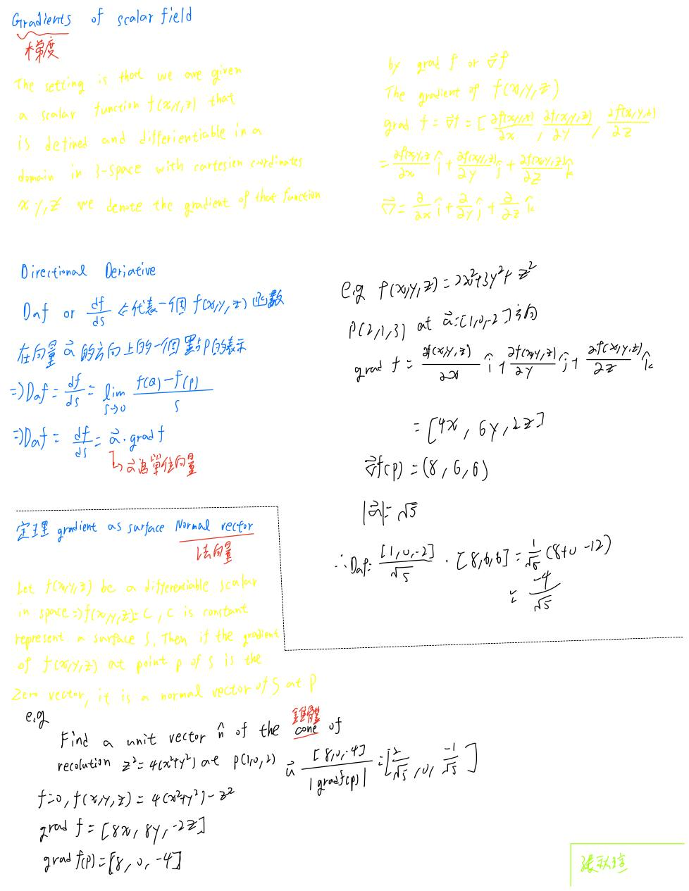
馬上練
1. $f=x^2y+yz^3$，求 $\nabla f$。
$\nabla f=[2xy,\ x^2+z^3,\ 3yz^2]$。注意第一分量對 $y$ 寫成 $2xy$（$x^2y$ 對 $x$ 微）、第二分量 $x^2+z^3$（對 $y$ 微）、第三個 $3yz^2$（對 $z$ 微）。
2. 承上，$f$ 在 $P(1,1,1)$ 往 $(1,0,0)$ 方向的方向導數？
$\nabla f(P)=[2,2,3]$，單位方向 $=[1,0,0]$ ⇒ $D=2$。（往 $x$ 方向走，其實就是偏導數 $f_x$，對吧？）
3. 球面 $x^2+y^2+z^2=a^2$ 在 $P(1,1,1)$ 的法向量方向？
$f=x^2+y^2+z^2$，$\nabla f=[2x,2y,2z]$ ⇒ 在 $P$ 是 $[2,2,2]\parallel[1,1,1]$，正是從球心指向 $P$ 的方向 ✓（球面的法向量就是半徑方向）。
07散度 · 旋度 · 原稿 p.8–9
三種「$\nabla$ 與場的作用」：$\nabla\cdot$（散度，量「有沒有冒出來」）、$\nabla\times$（旋度，量「有沒有打轉」）、$\nabla^2$（Laplacian，量「跟鄰居的平均差多少」）。
在空間中某一點放一個小水龍頭，散度就告訴你「這裡是水源還是排水孔」；放一個小風車，旋度就告訴你「這裡的流會不會把它轉起來」。
向量場＝空間中每一點都插一支箭（例如流速、電場、磁場）。純量場是一個數、向量場是一支箭。
- 「$\nabla\cdot\vec v$」＝算子跟向量做內積，所以結果是純量（一個數）。
- 白話：把這一點想像成一個小方塊，流出去的比流進來的多多少。$\nabla\cdot\vec v>0$＝這裡是源（水龍頭）；$<0$＝這裡是匯（排水孔）；$=0$＝不可壓縮（incompressible）。
- 每個分量只對自己的變數微分：$v_1$ 對 $x$、$v_2$ 對 $y$、$v_3$ 對 $z$。這是最容易搞錯的地方。
把梯度再取一次散度，就得到 Laplacian：
$$\operatorname{div}(\operatorname{grad}f)=\nabla\cdot(\nabla f)=\left(\frac{\partial}{\partial x}\hat i+\frac{\partial}{\partial y}\hat j+\frac{\partial}{\partial z}\hat k\right)\cdot\left(\frac{\partial f}{\partial x}\hat i+\frac{\partial f}{\partial y}\hat j+\frac{\partial f}{\partial z}\hat k\right)=\frac{\partial^2f}{\partial x^2}+\frac{\partial^2f}{\partial y^2}+\frac{\partial^2f}{\partial z^2}=\nabla^2f$$原稿那句英文要背下來：the divergence of the gradient is the Laplacian（梯度的散度就是 Laplacian）。注意內積時 $\hat i\cdot\hat i=1$、$\hat i\cdot\hat j=0$，所以只剩三個自己乘自己的項——這就是為什麼只有三項。
旋度是 $\nabla$ 跟向量做外積，結果是向量：
$$\operatorname{curl}\vec v=\nabla\times\vec v=\begin{vmatrix}\hat i&\hat j&\hat k\\[2pt] \dfrac{\partial}{\partial x}&\dfrac{\partial}{\partial y}&\dfrac{\partial}{\partial z}\\[6pt] v_1&v_2&v_3\end{vmatrix} =\left(\frac{\partial v_3}{\partial y}-\frac{\partial v_2}{\partial z}\right)\hat i-\left(\frac{\partial v_1}{\partial z}-\frac{\partial v_3}{\partial x}\right)\hat j+\left(\frac{\partial v_2}{\partial x}-\frac{\partial v_1}{\partial y}\right)\hat k$$怎麼記？ 原稿把三個 2×2 小行列式圈起來，就是「展開時每個 $\hat i,\hat j,\hat k$ 對應一個 2×2 行列式」。實用記法：輪轉——每個分量都是「下一個變數對上一個變數」的差（$y\to z\to x\to y$），中間那項前面加負號。旋度描述場在該點附近是否在打轉（把一個小風車放進去會不會轉）。
思路
- 先認出三個分量：$v_1=yz$、$v_2=3zx$、$v_3=z$。（$3zx$ 就是 $3xz$，順序不影響。）
- 排行列式：第一列 $\hat i\hat j\hat k$、第二列是三個偏導算子、第三列是 $v_1v_2v_3$。
- 展開第 $\hat i$ 個分量：$\dfrac{\partial v_3}{\partial y}-\dfrac{\partial v_2}{\partial z}$。$v_3=z$ 對 $y$ 微分＝0；$v_2=3zx$ 對 $z$ 微分＝$3x$。所以是 $0-3x=-3x$。
- 展開第 $\hat j$ 個分量：前面一定有一個減號。行列式展開是 $-\left(\dfrac{\partial v_3}{\partial x}-\dfrac{\partial v_1}{\partial z}\right)$（就是把 $j$ 那一行／列拿掉後，剩下的 2×2 行列式）。所以 $-(0-y)=+y$。
如果你想背另一種寫法（比較常見的教科書版）也可以：$\operatorname{curl}_y\vec v=\dfrac{\partial v_1}{\partial z}-\dfrac{\partial v_3}{\partial x}=y-0=y$——兩種寫法答案一樣，因為 $-(a-b)=b-a$。 - 展開第 $\hat k$ 個分量：$\dfrac{\partial v_2}{\partial x}-\dfrac{\partial v_1}{\partial y}=3z-z=2z$。這項沒有負號。
- 最後檢查：算出來的旋度要同時垂直「場的變化方向」——這裡不方便目視檢查，但可以確認每一項都用了正確的偏導數。
旋度只有三個分量，但有兩個地方要小心：$\hat j$ 那項的減號、以及每個分量「誰對誰微分」的順序。最保險的做法：考試時先把三個分量的公式寫在紙邊——$(\partial_yv_3-\partial_zv_2,\ \ \partial_zv_1-\partial_xv_3,\ \ \partial_xv_2-\partial_yv_1)$——再一格一格填，填錯的機會就大幅下降。
一句話：「如果一個連續可微的向量場是某個純量函數的梯度，那它的旋度必為 0」。
證明思路（一行就好）：把行列式寫開，每個分量都是 $f$ 的混合偏導數相減，例如第一分量 $\dfrac{\partial}{\partial y}\dfrac{\partial f}{\partial z}-\dfrac{\partial}{\partial z}\dfrac{\partial f}{\partial y}=f_{zy}-f_{yz}=0$（$f$ 夠光滑時混合偏導數相等，與順序無關）。三個分量都成對抵消 ⇒ 零向量。
這條定理的用途：快速判斷「這個場可不可能是保守場」，第 8 章算線積分時會用到。
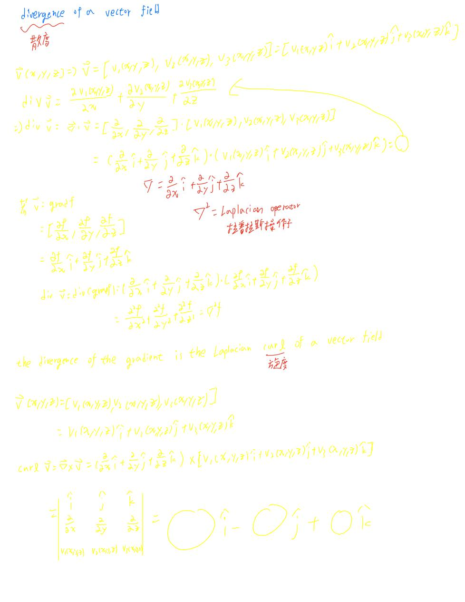
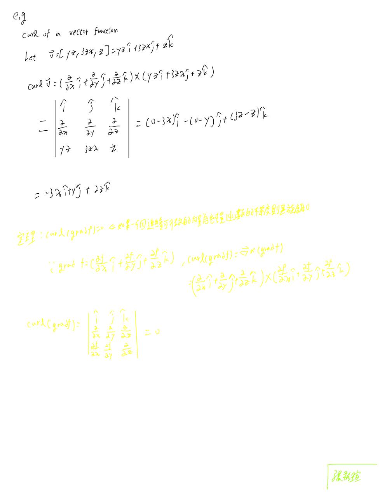
馬上練
1. $\vec v=[x^2,\ xy,\ xz]$，求 $\nabla\cdot\vec v$。
$2x+x+x=4x$。（$v_1$ 對 $x$、$v_2$ 對 $y$、$v_3$ 對 $z$，各自只微一次。）
2. $f=x^2y+z^3$，求 $\nabla^2f$。
$f_{xx}=2y$、$f_{yy}=0$、$f_{zz}=6z$ ⇒ $\nabla^2f=2y+6z$。
3. 判斷：$\vec v=[y,z,x]$ 的旋度是？它會是某個 $f$ 的梯度嗎？
$\nabla\times\vec v=(-1,-1,-1)\ne\vec0$（這題在 p.15 用過），所以不是梯度場、不可能寫成 $\nabla f$。
08線積分 原稿 p.10 – p.11 上半
以前積分是「沿著 $x$ 軸一小段一小段加起來」。現在把它推廣成沿著一條彎曲的路徑一小段一小段加起來。原稿一開始那三行黃字，就是這一章的作戰手冊。
沿著一條路走，把每一步的「力 · 位移」加起來，就是總共做的功。如果這個力場是某個位能的梯度（保守場），那做功只看起點與終點的高度差，中途怎麼繞都一樣。
原稿寫：
- 若 $\vec F=\nabla f$（也就是場是某個函數的梯度）⇒ 呼作保守場，積分只跟頭尾有關。
- 若 $C$ 是一封閉曲線（起點＝終點）⇒ 寫成 $\oint_C$，並且「$\vec F$ 是保守場 $\iff\oint_C\vec F\cdot d\vec r=0$」。
- 若 $\vec F$ 是向量場，繞一圈的環流 $\oint\vec F\cdot d\vec r$ 就代表沿這條路「做了多少功」（物理裡的 work）。
路徑 $C$ 用 $\vec r(t)$ 表示，$a\le t\le b$。走一小段的位移是 $d\vec r=\vec r'(t)\,dt$，所以
$$\int_C\vec F\cdot d\vec r=\int_a^b \vec F\big(\vec r(t)\big)\cdot \vec r'(t)\,dt=\int_a^b\big(F_1x'(t)+F_2y'(t)+F_3z'(t)\big)dt$$固定流程（背這四步就好）：
- 把曲線參數化：寫出 $x(t),y(t),z(t)$ 與範圍。
- 把 $\vec F$ 裡的 $x,y,z$ 全部換成 $t$ ⇒ 得到 $\vec F(\vec r(t))$。
- 微分出 $\vec r'(t)$，做內積。
- 對 $t$ 做一般定積分。
原稿的定理：在 $C$ 上的積分若只在乎起點與終點，則不管走哪條路，值都相同。而這件事成立的條件就是 $\vec F=\nabla f$（保守場）；此時
$$\int_C\vec F\cdot d\vec r=\int_C\nabla f\cdot d\vec r=f(\text{終點})-f(\text{起點})$$$f$ 叫做位勢函數（potential function）——它就是物理裡的位能。怎麼從 $\vec F$ 找回 $f$？ 把三個分量分別對 $x,y,z$ 積分，再把三次的結果拼起來（共用項只算一次）。
思路
- 先確認「$\vec F$ 是不是某個 $f$ 的梯度」：題目已經給了 $f$，驗算 $\nabla f=[2x,2y,4z]=\vec F$ ✓。所以這是保守場，積分只跟頭尾有關。
- 路 A（照定義硬算）：把 $x=t,y=t,z=t$ 代進 $\vec F$ 得 $\vec F(\vec r(t))=[2t,2t,4t]$；再算 $\vec r'(t)=[1,1,1]$。
- 內積：$2t\cdot1+2t\cdot1+4t\cdot1=8t$（這一步最好寫出來，才不會漏項）。
- 積分：$\int_0^2 8t\,dt=4t^2\Big|_0^2=16$。
- 路 B（用位勢函數，10 秒鐘）：$\vec r(t)=[t,t,t]$ 在 $t=0$ 時是 $(0,0,0)$、$t=2$ 時是 $(2,2,2)$。所以 $$\int_C\vec F\cdot d\vec r=f(2,2,2)-f(0,0,0)=(4+4+8)-0=16\ \checkmark$$
原稿寫「$f(A)-f(B)=16$」，但 $A(1,1,1)$ 代入 $f$ 只有 $1+1+2=4$，跟 16 對不起來。原因：$A、B$ 只是圖上標的兩個點，真正走的路徑是從 $(0,0,0)$ 到 $(2,2,2)$，所以位勢差要用路徑的兩個端點去算。這正好是這題要你體會的：算保守場的線積分，看的是「你從哪走到哪」，不是圖上隨手標的點。
思路
- 這條路徑不是封閉曲線（從 $(1,0)$ 走到 $(0,1)$），所以不能直接說「等於 0」。先檢查是不是保守場：$\operatorname{curl}\vec F=\partial_x(-xy)-\partial_y(-y)=-y-(-1)=1-y\ne0$ ⇒ 非保守，沒有位勢函數可用。
- 所以只好照四步走：先寫出 $\vec F(\vec r(t))$。分量一 $-y\to-\sin t$；分量二 $-xy\to-\cos t\sin t$。所以 $\vec F(\vec r(t))=[-\sin t,\ -\cos t\sin t]$。
- 再算 $d\vec r$：$x'(t)=-\sin t$、$y'(t)=\cos t$。
- 內積：$(-\sin t)(-\sin t)+(-\cos t\sin t)(\cos t)=\sin^2t-\cos^2t\sin t$。
- 積分拆兩塊：$\int_0^{\pi/2}\!\sin^2t\,dt=\dfrac{\pi}{4}$（半角公式），$\int_0^{\pi/2}\!\cos^2t\sin t\,dt=\left[-\dfrac{\cos^3t}{3}\right]_0^{\pi/2}=0+\dfrac13=\dfrac13$。
- 相減：$\dfrac{\pi}{4}-\dfrac13\approx0.7854-0.3333=0.4521$。
兩個積分技巧一定要熟：① $\int\sin^2$ 或 $\int\cos^2$ 用半角公式（$\sin^2t=\frac{1-\cos2t}{2}$）；② $\int\cos^2t\sin t\,dt$ 用代換 $u=\cos t$。看到「一個是另一個的導數」就代換，這是微積分裡最可靠的直覺。
原稿接著寫了兩條「積分是線性的」性質，很直觀但常考：
$$\int_C(\vec F+\vec G)\cdot d\vec r=\int_C\vec F\cdot d\vec r+\int_C\vec G\cdot d\vec r,\qquad \int_{C_1+C_2}\vec F\cdot d\vec r=\int_{C_1}\vec F\cdot d\vec r+\int_{C_2}\vec F\cdot d\vec r$$白話：把一條長路徑拆成幾段，總功等於各段功相加；兩個場疊加，功也相加。
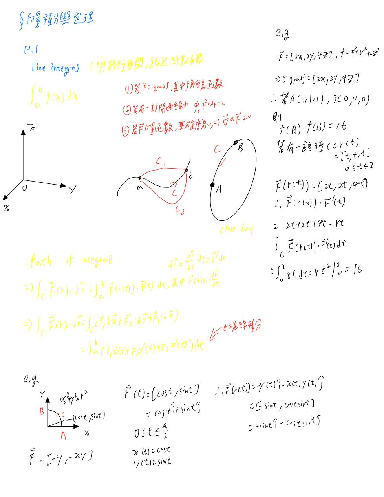
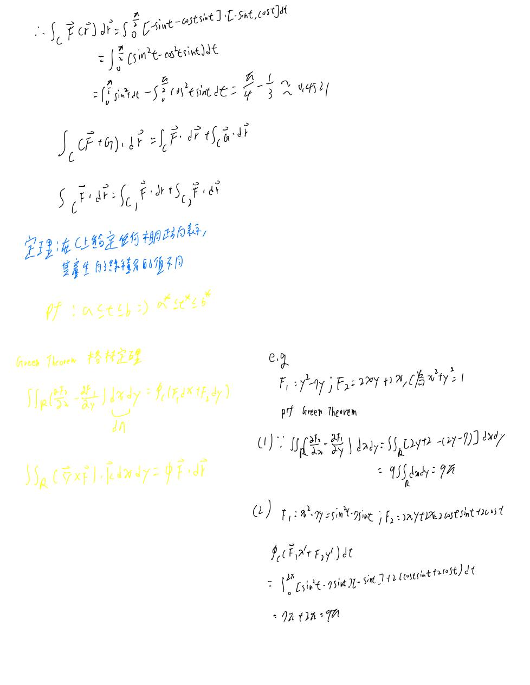
馬上練
1. $\vec F=[y,x]$ 是否保守？若是，求位勢函數 $f$。
$\operatorname{curl}\vec F=\partial_x(x)-\partial_y(y)=1-1=0$ ⇒ 保守。由 $f_x=y$ 得 $f=xy+g(y)$；再由 $f_y=x+g'(y)=x$ ⇒ $g'=0$，所以 $f=xy+C$。（這題的積分只跟端點有關：$\int_{(0,0)}^{(2,3)}\vec F\cdot d\vec r=xy\big|^{3}_{2}=6$。）
2. 承上，沿著單位圓一整圈 $\oint\vec F\cdot d\vec r=?$
$0$。因為是保守場、路徑封閉 ⇒ 起點＝終點 ⇒ 位勢差不為 0 才奇怪。
09格林定理（）原稿 p.11 下半
平面版的「繞一圈」＝「把裡面切碎加起來」。它的價值是：把一條很難參數化的邊界線積分，換成一片很好算的面積分。
繞著一片區域的邊界走一圈量到的東西，等於把區域裡面每一小塊的「小旋轉」全部加起來——就像繞操場走一圈感受到的風，正好是操場上所有小旋風的總和。
設 $C$ 是平面上封閉的簡單曲線（逆時針為正向），$R$ 是它圍出的區域，$\vec F=[F_1,F_2]$。則
$$\oint_C\big(F_1\,dx+F_2\,dy\big)=\iint_R\left(\frac{\partial F_2}{\partial x}-\frac{\partial F_1}{\partial y}\right)dx\,dy$$左邊：沿邊界走一圈的線積分（環流）。右邊：把界內每一小塊的「旋轉量」（其實就是 $(\nabla\times\vec F)_z$）加起來。
怎麼記右邊是誰減誰？ 記「後者對前者、前者對後者」容易亂，最保險是記成 $(\nabla\times\vec F)$ 的 $z$ 分量：$\dfrac{\partial F_2}{\partial x}-\dfrac{\partial F_1}{\partial y}$——和旋度第三分量 $\partial_xv_2-\partial_yv_1$ 一模一樣。
思路（方法一：格林定理）
- 先算被積函數：$\dfrac{\partial F_2}{\partial x}=2y+2$（$F_2$ 只有第一項含 $x$，$2xy\to2y$；$2x\to2$）。
- $\dfrac{\partial F_1}{\partial y}=2y-7$（$y^2\to2y$，$-7y\to-7$）。
- 相減：$(2y+2)-(2y-7)=9$。$y$ 項全部抵消——這是出題老師的善意，剩下一個常數。
- 常數可以直接提出積分號：$9\iint_R dx\,dy=9\times(\text{圓面積})=9\pi$。
思路（方法二：直接參數化驗證）
- 圓的參數式：$x=\cos t$、$y=\sin t$，$t:0\to2\pi$；所以 $x'=-\sin t$、$y'=\cos t$。
- 把 $F_1,F_2$ 換成 $t$：$F_1=\sin^2t-7\sin t$、$F_2=2\cos t\sin t+2\cos t$。
- 線積分 $\oint(F_1x'+F_2y')dt$ 展開成四項：$-\sin^3t$、$+7\sin^2t$、$+2\cos^2t\sin t$、$+2\cos^2t$。
- 逐項積分一圈（$0\to2\pi$）：奇函數項（$\sin^3t$、$\cos^2t\sin t$）在整週期上為 0；$7\int_0^{2\pi}\sin^2t\,dt=7\pi$；$2\int_0^{2\pi}\cos^2t\,dt=2\pi$。
- 合計 $0+7\pi+0+2\pi=9\pi$ ✓ 與方法一相同。
① 原稿第一行把 $F_1$ 寫成 $y^2-9y$，但同頁後面的計算與答案是按 $-7y$ 走的（$2y+2-(2y-7)=9$ 才對得上 $9\pi$），以 $-7y$ 為準。
② 用格林定理時先看「$y$ 項會不會抵消」：會抵消就幾乎是送分題。
③ 方向一定要逆時針（正向）；若題目給順時針，答案要變號。
馬上練
1. 用格林定理算 $\oint_C(x\,dy)$，$C$ 為單位圓。
$F_1=0$、$F_2=x$ ⇒ 積分 $=\iint_R(1-0)dA=\pi$（＝圓面積）。順便得到一個有用的結論：$\oint x\,dy$ 就是面積。
2. $\vec F=[-y,x]$，$C$ 為半徑 $2$ 的圓，求環流。
$\partial_x F_2-\partial_y F_1=1-(-1)=2$ ⇒ 環流 $=2\times$ 面積 $=2\times4\pi=8\pi$。（這種場是「純旋轉場」，繞一圈永遠不為 0。）
10座標系與表面積分原稿 p.12–13
圓、球、圓柱用直角座標寫會有一堆根號。這一章教你換座標：換完之後，曲面變成一個「方形區域」，積分立刻變簡單。
同一道積分，換一副「量尺」就可能從難算變成好算：球用球座標、管子用柱座標。唯一要小心的是量尺換了，面積／體積元素也要跟著換（多出 $\rho$ 或 $r^2\sin\theta$）。
| 座標系 | 座標變數 | 用途（什麼形狀最好用） | 體積元素 |
|---|---|---|---|
| 直角／卡氏 | $(x,y,z)$ | 方盒、平面 | $dx\,dy\,dz$ |
| 圓柱（柱）座標 | $(\rho,\varphi,z)$ | 圓柱、圓盤、管子 | $\rho\,d\rho\,d\varphi\,dz$ |
| 球座標 | $(r,\theta,\varphi)$ | 球、球殼、圓錐 | $r^2\sin\theta\,dr\,d\theta\,d\varphi$ |
換座標的公式（原稿右邊那組矩陣）：
$$\begin{bmatrix}a_x\\a_y\\a_z\end{bmatrix}=\begin{bmatrix}\cos\varphi&-\sin\varphi&0\\ \sin\varphi&\cos\varphi&0\\ 0&0&1\end{bmatrix}\begin{bmatrix}a_\rho\\a_\varphi\\a_z\end{bmatrix} \ \Longleftrightarrow\ \begin{cases}a_x=a_\rho\cos\varphi-a_\varphi\sin\varphi\\ a_y=a_\rho\sin\varphi+a_\varphi\cos\varphi\\ a_z=a_z\end{cases}$$那是一個旋轉矩陣：把「徑向、切向」的分量轉回「$x$ 向、$y$ 向」。為什麼體積元素會多出 $\rho$（球座標多出 $r^2\sin\theta$）？ 因為越往外圍，同樣的角度張開的實際距離越長——那個多出來的就是「比例因子」。
曲面可以只用兩個參數 $u,v$ 描述（因為曲面是二維的）：
$$\vec F(u,v)=x(u,v)\hat i+y(u,v)\hat j+z(u,v)\hat k$$- 圓（半徑 $a$）：$\vec F(u)=[a\cos u,\ a\sin u]$
- 球面（半徑 $a$）：$\vec F(u,v)=a\cos v\cos u\ \hat i+a\cos v\sin u\ \hat j+a\sin v\ \hat k$，其中 $0\le u\le2\pi$、$-\frac\pi2\le v\le\frac\pi2$。
看這個式子怎麼讀：$u$ 是「繞一圈的方位角」、$v$ 是「上下爬的高度角」（所以 $v$ 只走半圈 $\pm90^\circ$ 就從南極到北極）。把 $v=\frac\pi2$ 代入 ⇒ $\vec F=(0,0,a)$ 正好是北極 ✓；把 $v=0$ 代入 ⇒ $x^2+y^2=a^2$ 正好是赤道 ✓。用這兩個特例檢查自己的參數式，是很好的習慣。
原稿把球面上位置向量的長度算了一遍：
$$|\vec F|=\sqrt{r^2\cos^2\theta\cos^2\varphi+r^2\cos^2\theta\sin^2\varphi+r^2\sin^2\theta} =\sqrt{r^2\cos^2\theta(\cos^2\varphi+\sin^2\varphi)+r^2\sin^2\theta}=r$$關鍵只有一步：$\cos^2\varphi+\sin^2\varphi=1$（把 $\varphi$ 收掉），接著 $\cos^2\theta+\sin^2\theta=1$（把 $\theta$ 也收掉），最後只剩 $r$。這個 $r$ 就是比例因子：球面上角度走一小步，實際走的距離是 $r\times$角度。所以球座標的體積元素才會帶 $r^2$。
表面積分（）
曲面 $S$ 上的積分，需要一個「面積元素」$dA$。如果曲面是 $z=g(x,y)$，把曲面投影到 $xy$ 平面，可以證明
$$dA=\sqrt{1+g_x^2+g_y^2}\ dx\,dy$$那個根號就是「曲面傾斜造成的放大率」：平面（$g_x=g_y=0$）時根號 $=1$，$dA=dxdy$ ✓。原稿用球面 $z=\sqrt{a^2-x^2-y^2}$ 為例，先把它改寫成 $z^2+x^2+y^2=a^2$（球面方程式，比較好看），就是這個用途。
思路（這題的價值是「教你怎麼選 $F_1,F_2$」）
- 目標：用格林定理（第 9 章）把面積分換成線積分。格林定理右邊的被積函數必須長成 $\dfrac{\partial F_2}{\partial x}-\dfrac{\partial F_1}{\partial y}$。
- 我們希望它變成 $\nabla^2f=f_{xx}+f_{yy}$。那就反推：讓 $\dfrac{\partial F_2}{\partial x}=f_{xx}\Rightarrow F_2=f_x$；讓 $-\dfrac{\partial F_1}{\partial y}=f_{yy}\Rightarrow F_1=-f_y$。
- 代進格林定理： $$\iint_R\nabla^2f\,dA=\oint_C\big(F_1\,dx+F_2\,dy\big)=\oint_C\big(-f_y\,dx+f_x\,dy\big)$$
- 把 $dx,dy$ 寫成「沿弧長參數 $s$」的形式：$dx=\dfrac{dx}{ds}ds$、$dy=\dfrac{dy}{ds}ds$，於是 $$\oint_C\left(-f_y\frac{dx}{ds}+f_x\frac{dy}{ds}\right)ds$$
- 注意 $(\frac{dx}{ds},\frac{dy}{ds})$ 是單位切向量，把它的尾巴轉 $90^\circ$ 就得到外法向量 $\hat n=(\frac{dy}{ds},-\frac{dx}{ds})$。所以括號裡那串正是 $$f_x\hat n_x+f_y\hat n_y=\nabla f\cdot\hat n=\frac{\partial f}{\partial n}$$
- 收工：$\displaystyle\iint_R\nabla^2f\,dA=\oint_C\frac{\partial f}{\partial n}\,ds$。
原稿在 $F_1,F_2$ 的正負號上好幾處跳來跳去（這頁在課堂上是邊推邊改）。你自己做這類題目的口訣：「要 $f_{xx}$ 就把 $f_x$ 放在 $F_2$；要 $f_{yy}$ 就把 $f_y$ 放進 $F_1$ 再取負號」。這樣永遠不會記錯。
這個公式的物理名字是格林第一／第二恆等式的平面版，看起來很抽象，但它是熱傳導（$\nabla^2T=0$ 的邊界條件）的基礎。
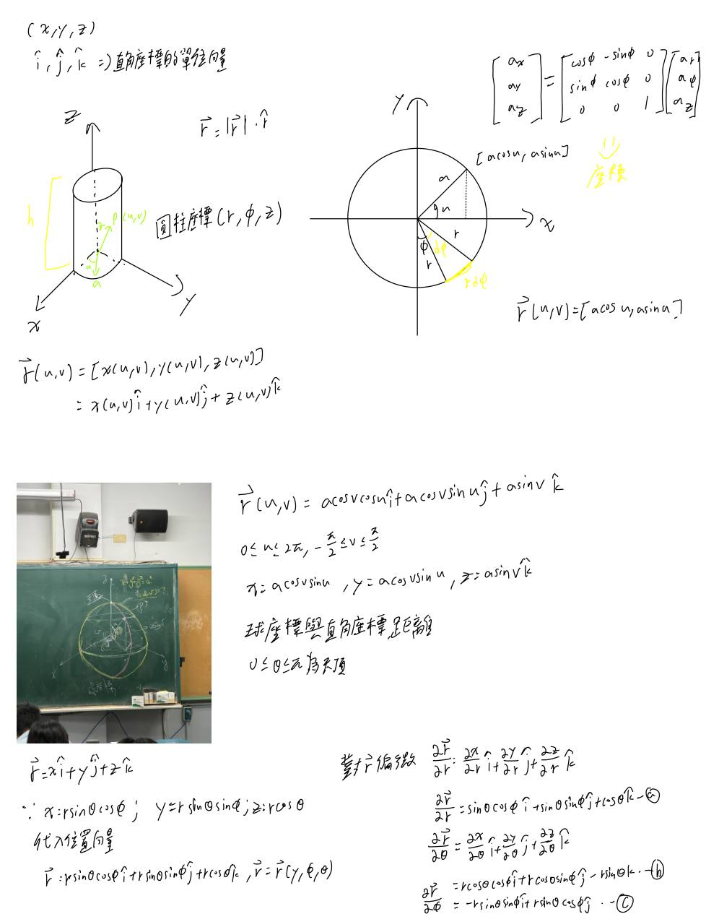
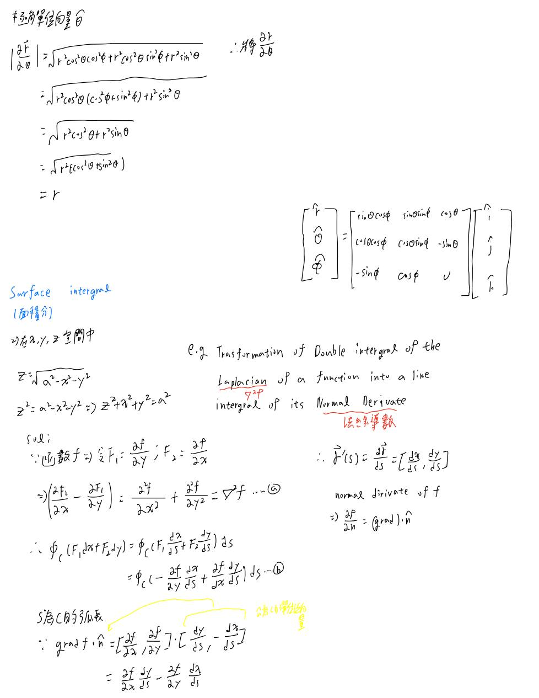
11高斯散度定理（）原稿 p.14
格林定理是「平面版」；高斯散度定理是它的「立體版」：一個體積裡所有小方塊的「冒出量」加起來，等於從整個表面流出來的總量。
想知道氣球裡有多少空氣在往外跑？不用鑽進去，只要在表面量「往外流的總量」就好——這就是散度定理：內部的冒出量＝表面看到的通量。
- $T$：空間中的一塊體積；$S$：包住它的封閉曲面（要「密閉」，才叫 Gauss）。
- $\hat n=[\cos\alpha,\cos\beta,\cos\gamma]$ 是朝外的單位法向量（$\alpha,\beta,\gamma$ 是它跟三軸的夾角）。
- 右邊 $\iint\vec F\cdot\hat n\,dA$ 叫 通量（flux）：單位時間穿過表面的流量。
- 原稿把它寫成座標形式：$\iint_S\big(F_1\,dy\,dz+F_2\,dz\,dx+F_3\,dx\,dy\big)$——因為 $\hat n\,dA$ 的三個分量就是三個投影面的面積元素。
思路
- 「算曲面通量」這種題目，只要曲面封閉，第一步先算散度——通常比直接積三個面（頂、底、側面）快十倍。
- 算散度：$x^3\to3x^2$；$x^2y$ 對 $y$ 微分 → $x^2$；$x^2z$ 對 $z$ 微分 → $x^2$。合計 $\nabla\cdot\vec F=5x^2$。
- 看到 $x^2$ 而且形狀是圓柱 ⇒ 換圓柱座標：$x=\rho\cos\varphi$，所以 $5x^2=5\rho^2\cos^2\varphi$。
- 體積元素 $dV=\rho\,d\rho\,d\varphi\,dz$，積分範圍：$\rho:0\to a$、$\varphi:0\to2\pi$、$z:0\to h$。
- 三個變數可以分開積（因為沒有任何一項同時含兩個變數）： $$\iiint 5\rho^2\cos^2\varphi\cdot\rho\,d\rho\,d\varphi\,dz=5\Big(\int_0^h\!dz\Big)\Big(\int_0^{2\pi}\!\cos^2\varphi\,d\varphi\Big)\Big(\int_0^a\!\rho^3\,d\rho\Big)$$
- 三個積分分別是 $h$、$\pi$（半角公式）、$\frac{a^4}{4}$。相乘得 $\dfrac{5\pi a^4h}{4}$。
① 散度只有三個項，而且每個分量只對「自己的」變數微——這裡 $x^2y$ 是對 $y$ 微不是對 $x$ 微。
② 換座標時不要忘記 $dV$ 的比例因子 $\rho$（球座標是 $r^2\sin\theta$）。忘掉它是最常見的錯。
③ 若題目問的是「不封閉」的曲面通量，就不能用散度定理，得老實算面積分（或自己補一個蓋子湊成封閉）。
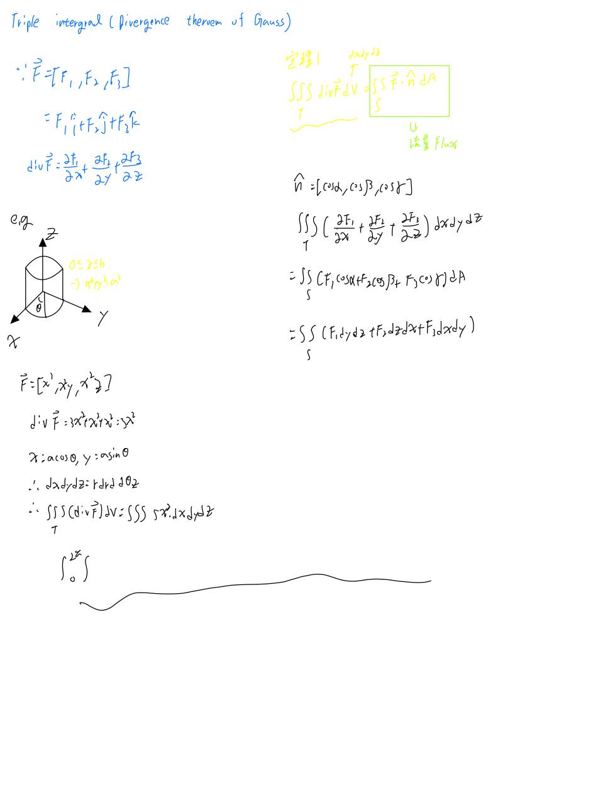
12斯托克斯定理（）原稿 p.15
又一個「把難的換成簡單的」：曲面上的旋度通量 ＝ 沿著曲面邊界走一圈的環流。它跟格林定理的關係是：格林就是斯托克斯在平面上的特例。
想知道一片帆布上有多少小旋轉？不必整片檢查，只要沿著帆布的邊緣走一圈就知道了。這就是斯托克斯定理。
- 左邊：把曲面 $S$ 上每一點的「旋轉量」加起來（旋度通量）。
- 右邊：只沿著 $S$ 的邊界曲線 $C$ 走一圈（環流）。
- 格林定理其實就是「$S$ 躺在平面上、$\hat n=\hat k$」的斯托克斯定理（因為此時 $(\nabla\times\vec F)\cdot\hat k=\partial_xF_2-\partial_yF_1$）。
思路（左邊：參數化邊界算線積分）
- 先找邊界 $C$：$z=0$ 時 $0=1-(x^2+y^2)$ ⇒ $x^2+y^2=1$，所以 $C$ 是$xy$ 平面上的單位圓。
- 參數化：$x=\cos s$、$y=\sin s$、$z=0$，$s:0\to2\pi$。切向量 $\vec r'(s)=[-\sin s,\ \cos s,\ 0]$。
- 把參數式代進 $\vec F=[y,z,x]$：得 $\vec F(\vec r(s))=[\sin s,\ 0,\ \cos s]$。（$z=0$ 所以第二分量是 0。）
- 內積：$\sin s\cdot(-\sin s)+0\cdot\cos s+\cos s\cdot0=-\sin^2s$。
- 積一圈：$\int_0^{2\pi}-\sin^2s\,ds=-\pi$（因為 $\int_0^{2\pi}\sin^2=\pi$，前面有負號）。
思路（右邊：用旋度＋曲面法向量算面積分）
- 算旋度：$\vec F=[y,z,x]$ ⇒ $\nabla\times\vec F=(-1,-1,-1)$（三個分量都是「自己對下一個變數的導數 0」減「上一個的導數 1」，例如第一分量 $\partial_yx-\partial_zz=0-1=-1$）。
- 曲面的法向量用第 6 章的技巧：把曲面寫成 $\phi=z-f(x,y)=z-1+x^2+y^2=0$，則 $\nabla\phi=[2x,\ 2y,\ 1]$ 就是（未歸一化的）法向量。
- 於是 $(\nabla\times\vec F)\cdot\nabla\phi=(-1)(2x)+(-1)(2y)+(-1)(1)=-2x-2y-1$。（這裡不必把 $\nabla\phi$ 單位化，因為面積元素已經跟著換算成 $dxdy$——原稿寫的 $\hat n\,dA=\nabla\phi\,dxdy$ 就是這件事。）
- 剩下一個乾淨的雙重積分：$\iint_R(-2x-2y-1)dxdy$，$R$ 是單位圓盤。
- 關鍵一步（要會講）：$\iint_R2x\,dA=0$、$\iint_R2y\,dA=0$，因為圓盤對原點對稱，正負互相抵消（奇函數對稱區域積分為 0）。所以只剩 $-\iint_R1\,dA=-(\text{圓盤面積})=-\pi$。
① 看到「$\iint 2x\,dA$」要立刻想到對稱性，不要真的去積分——這是省時間的關鍵。
② 方向要一致：邊界 $C$ 的走向必須與 $\hat n$ 符合右手定則（這裡 $\hat n$ 大致朝上、$C$ 逆時針 ✓）。方向反了，兩邊會同時變號（答案變 $+\pi$）。
③ 如果曲面很複雜、但邊界很簡單（例如這題的碗 vs 單位圓），用斯托克斯把曲面的積分換成邊界的線積分永遠是首選。
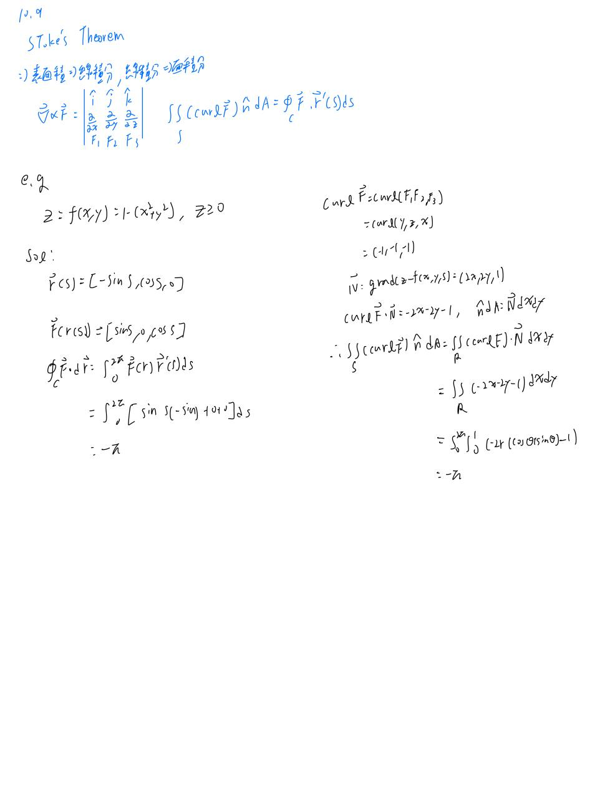
| 定理 | 公式 | 一句話 |
|---|---|---|
| 格林 | $\oint_C(F_1dx+F_2dy)=\iint_R(\partial_xF_2-\partial_yF_1)dA$ | 平面：繞邊界 ＝ 界內旋轉量總和 |
| 高斯（散度） | $\iiint_T\nabla\!\cdot\!\vec F\,dV=\iint_S\vec F\!\cdot\!\hat n\,dA$ | 立體：內部冒出量 ＝ 表面總通量 |
| 斯托克斯 | $\iint_S(\nabla\!\times\!\vec F)\!\cdot\!\hat n\,dA=\oint_C\vec F\!\cdot\!d\vec r$ | 曲面：旋度通量 ＝ 邊界環流 |
三者都是「微分的東西在裡面加起來 = 原來的東西在邊界上看」。格林是斯托克斯的平面特例；高斯處理「體積 vs 封閉面」，斯托克斯處理「曲面 vs 邊界線」。
13矩陣與線性方程組原稿 p.16–19
「Ch.9 矩陣、行列式」開始進入線性代數。整個動機只有一句：把一大串方程式（例如電路的三條 KVL）塞進一個方括號裡，然後用機械化的步驟解掉它。
矩陣就是「把一疊方程式排整齊變表格」。列運算＝用加減消去法打掃這張表格，打掃成階梯狀之後，答案可以直接由上往下讀出來。
A matrix is a rectangular array of numbers or functions, enclosed in brackets.
矩陣＝把數字（或函數）排成長方形，外面加個方括號。
- 元素記號 $a_{jk}$：$j$ 是第幾列（row）、$k$ 是第幾行（column）。原稿寫 $A=[a_{jk}]$ 就是這個意思。
- 只有一列的叫 row vector（列向量），只有一行的叫 column vector（行向量）。
- 矩陣相等：大小一樣、而且每一個位置的元素都一樣，才叫相等。
看這個聯立方程組：
$$\begin{cases}4x_1+6x_2+9x_3=6\\ 6x_1-2x_3=20\\ 5x_1-8x_2+x_3=10\end{cases}$$把係數、未知數、常數分開，就可以寫成矩陣：
$$A=\begin{bmatrix}4&6&9\\6&0&-2\\5&-8&1\end{bmatrix},\qquad \vec x=\begin{bmatrix}x_1\\x_2\\x_3\end{bmatrix},\qquad \vec B=\begin{bmatrix}6\\20\\10\end{bmatrix},\qquad A\vec x=\vec B$$- 第二列那個「$6x_1-2x_3=20$」沒有 $x_2$ 項，係數補 0——這是初學者最常忘記的地方（$A$ 的第二列是 $[6,0,-2]$）。
- 矩陣形式的好處：三個未知數、三個方程式，用列運算（見下面例題 25）就有系統的解法，不必再用加減消去法猜來猜去。
矩陣的運算
| 運算 | 條件 | 做法 |
|---|---|---|
| 相加 $A+B$ | 兩者 size 必須相同 | 同位置的元素相加 |
| 乘純量 $cA$ | 無條件 | 每個元素都乘 $c$ |
| 相乘 $AB$ | $A$ 的行數 ＝ $B$ 的列數 | 「$A$ 的第 $j$ 列」乘「$B$ 的第 $k$ 行」（對應相乘再相加） |
| 轉置 $A^T$ | 無條件 | 把矩陣翻過來（列變行、行變列） |
$A$ 是 $m\times n$、$B$ 是 $n\times p$，乘起來就會是 $m\times p$。中間那兩個 $n$ 一定要一樣才能相乘，而且乘完就會消失。反過來寫 $BA$ 的話，要 $p=m$ 才有定義——所以「$AB$ 可以乘」不代表「$BA$ 可以乘」，這在原稿特別註明。還有：$AB\ne BA$（乘法不交換），即使兩個都能乘、大小也相同，結果通常不一樣。
思路
- 先數：未知數 $x_1,x_2,x_3$ 共 3 個；方程式 3 條（未知數個數 ＝ 方程式條數 ⇒ 有機會是「唯一解」）。
- 逐列填係數：第 1 列讀第 1 條方程式（$4,6,9$）；第 2 列讀第 2 條（$6,0,-2$，缺的補 0）；第 3 列讀第 3 條（$5,-8,1$）。
- 等號右邊的數字放進 $\vec B$，未知數放進 $\vec x$。
用後面第 16、17 章的克拉瑪公式或反矩陣可以解出 $\vec x=\left[3,\ \tfrac12,\ -1\right]^T$。自己驗算：$4(3)+6(\frac12)+9(-1)=12+3-9=6$ ✓、$6(3)-2(-1)=20$ ✓、$5(3)-8(\frac12)+(-1)=15-4-1=10$ ✓。
思路
- 先確認尺寸：$A$ 是 $3\times3$、$B$ 是 $3\times4$ ⇒ 中間的 3 對上了，結果會是 $3\times4$。先寫好答案的格子（3 列 4 行），再一格一格填，這樣才不會東漏西漏。
- 填 $C_{11}$（第 1 列 × 第 1 行）：$A$ 第 1 列是 $(3,5,-1)$、$B$ 第 1 行是 $(2,5,9)$ ⇒ $3(2)+5(5)+(-1)(9)=6+25-9=22$。
- 填 $C_{12}$：$A$ 第 1 列 × $B$ 第 2 行 $(−2,0,−4)$ ⇒ $3(-2)+5(0)+(-1)(-4)=-6+0+4=-2$。
- 依此類推。原稿做的就是這件事，只是用「橫的乘直的」的手勢在紙上比。
① 原稿最後一行有兩個數字（43 寫成 41、−37 寫成 −17、−28 寫成 −18）是上課手算時的快寫誤差，請以上面自己乘出來的為準。做矩陣乘法時，每一格都獨立算一次，不要「沿著上一格改」，這樣才不會一路錯下去。
② 請順手驗一件事：$AB\ne BA$（$B$ 是 $3\times4$，$BA$ 根本無法乘）——這就是原稿寫「$AB\ne BA$」的原因。
思路
- 轉置就是「沿著左上→右下那條對角線翻過去」：第 1 列變成第 1 行。
- 所以 $(5,-8)$ 那一列會變成第一行 $(5,4)^T$…等等，要一格一格看：$a_{12}=-8$ 會搬到 $a_{21}$ 的位置。
- 結果就是原矩陣的「鏡射」：$2\times2$ 的情況，兩邊斜對角的元素互換、對角線上的兩個不動。
轉置的四條規則（原稿右側，全部要背）：
$$(A^T)^T=A,\qquad (A+B)^T=A^T+B^T,\qquad (cA)^T=cA^T,\qquad \boxed{(AB)^T=B^TA^T}$$最後一條最容易寫錯：順序要反過來（先 $B^T$ 再 $A^T$）！這跟反矩陣的規則 $(AB)^{-1}=B^{-1}A^{-1}$ 是同一個道理（見第 17 章）。
幾個「有名字的」矩陣（原稿右下）
| 名稱 | 條件 | 例子 |
|---|---|---|
| 對稱矩陣（symmetric） | $A^T=A$ | $\begin{bmatrix}1&2&3\\2&0&4\\3&4&0\end{bmatrix}$ |
| 對角矩陣（diagonal） | 非對角線元素全為 0 | $\begin{bmatrix}a_{11}&0&0\\0&a_{22}&0\\0&0&a_{33}\end{bmatrix}$ |
| 上三角／下三角 | 對角線以下全為 0（上三角） | $\begin{bmatrix}1&2&3\\0&4&5\\0&0&6\end{bmatrix}$ |
| 純量矩陣（scalar） | 對角線元素全部相同 | $\begin{bmatrix}3&0\\0&3\end{bmatrix}=3I$ |
| 單位矩陣（unit／identity） | 對角線全是 1、其餘 0 | $I=\begin{bmatrix}1&0\\0&1\end{bmatrix}$ |
單位矩陣的角色：矩陣世界的「1」。$IA=A$、$AI=A$。它在第 17 章求反矩陣時是主角（就是我們要把 $A$ 變成的那個目標）。
高斯消去法：用列運算解方程組
把係數矩陣 $A$ 和常數項 $\vec B$ 併在一起，中間畫一條線：
$$[\,A\mid\vec B\,]=\begin{bmatrix}2&5&\vline&2\\-4&3&\vline&-30\end{bmatrix}$$為什麼要併在一起？因為解方程組時，我們對係數和常數做一模一樣的運算，併起來才不會漏掉常數那一欄。下面三種「列運算」不會改變解：① 兩列互換 ② 某列乘非零常數 ③ 某列加另一列的倍數。
思路
- 寫增廣矩陣：第一列讀第一式、第二列讀第二式。
- 目標是讓左下角變成 0（變成上三角），這樣最後一列只含一個未知數。
- 觀察：$2\times2=4$，而第二列的第一個元素是 $-4$。所以做 $\text{R}_2+2\text{R}_1$ 正好把 $-4$ 消掉。
- 新的第二列是 $[0,\ 3+10\ \vline\ -30+4]=[0,13\vline-26]$。
- 回推：$13x_2=-26\Rightarrow x_2=-2$；代回第一式 $2x_1+5(-2)=2\Rightarrow 2x_1=12\Rightarrow x_1=6$。
思路
- 為什麼會有三條方程式？ 兩個獨立迴路（左、右）各寫一條 KVL（沿迴路走一圈，電壓升＝電壓降），再加上一條「$i_1-i_2+i_3=0$」這種把電流互相關聯起來的關係式（節點／迴路關係）。
- 全部寫成增廣矩陣。原稿把第一條（0 常數列）也寫進去，所以是 4 列：$x_1-x_2+x_3=0$ 有兩條（互為負號，是多餘的），列運算後會自然變成 0 列。
- 列運算：$\text{R}_2+2\text{R}_1$ 消掉第一行；$\text{R}_3-20\text{R}_1$ 消掉第一行；接著把第 2、3 列搭配消去第二行。
- 化到最簡後出現 $[0,0,-95\ \vline\ -190]$ ⇒ $-95x_3=-190\Rightarrow x_3=2$。
- 往上回代：$10x_2+25(2)=90\Rightarrow10x_2=40\Rightarrow x_2=4$；再由 $x_1-x_2+x_3=0\Rightarrow x_1=4-2=2$。
原稿把第二條寫成「$20x_1+10x_3=80$」，但矩陣的列是 $[20,10,0\mid80]$，代表 $20x_1+10x_2=80$，而且只有這樣代入 $(2,4,2)$ 才會等於 80。這是抄式子時看錯行的典型失誤——寫完方程組一定要回代檢查，一秒就能發現。
(a) 無限多組解的例子（原稿左側，含小數係數）
- 原稿的系統（4 個未知數、3 條方程式）：
$$3x_1+2x_2+2x_3-5x_4=8$$ $$0.6x_1+1.5x_2+1.5x_3-5.4x_4=2.7$$ $$1.2x_1-0.3x_2-0.3x_3+2.4x_4=2.1$$ - 列運算：$\text{R}_2-0.2\text{R}_1$（為什麼是 0.2？因為 $0.6/3=0.2$）、$\text{R}_3-0.4\text{R}_1$。
- 得到第二列 $[0,\ 1.1,\ 1.1,\ -4.4\mid1.1]$、第三列 $[0,\ -1.1,\ -1.1,\ 4.4\mid-1.1]$。
- 把第三列加到第二列 ⇒ 整列變成 0（$1.1-1.1=0$、$-4.4+4.4=0$、$1.1-1.1=0$）。
- 「$0=0$」是一句廢話 ⇒ 這條方程式沒有提供新資訊。4 個未知數只有 2 個獨立條件 ⇒ 有無限多組解（可以自由選 2 個變數當參數）。
(b) 無解的例子
- 系統： $$2x_1+x_2+x_3=6,\qquad 6x_1+2x_2+4x_3=6,\qquad 3x_1+x_2+2x_3=-3$$
- 看下面一眼就知道會出事：第三式的左邊剛好是第二式左邊的一半（$3,1,2$ 是 $6,2,4$ 的一半），但右邊 $-3$ 卻不是 $6$ 的一半（應該要是 3）。
- 列運算：先互換讓第一列是 $[6,2,4\mid6]$，再做 $\text{R}_2-\frac13\text{R}_1$、$\text{R}_3-\frac12\text{R}_1$。
- 第三列變成 $[0,\ 0,\ 0\ \vline\ -3-3]=[0,0,0\mid-6]$ ⇒ 也就是「$0=-6$」。這是矛盾的算式，代表沒有任何 $(x_1,x_2,x_3)$ 能同時滿足三條 ⇒ 無解（方程組不一致 inconsistent）。
設有 $n$ 個未知數、$m$ 條方程式，化簡後有 $p$ 個非零列（＝係數矩陣的秩，第 14 章會正式定義）：
- 若 $p
- 若 $p=m=n$（正方形且滿秩）⇒ 恰有一組解（唯一解），此時 $\det A\ne0$。
- 若 $p
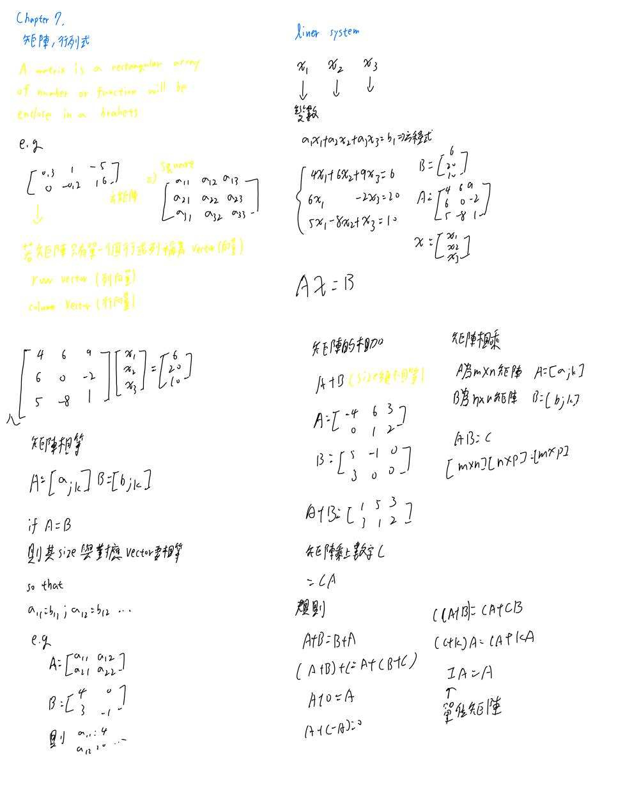
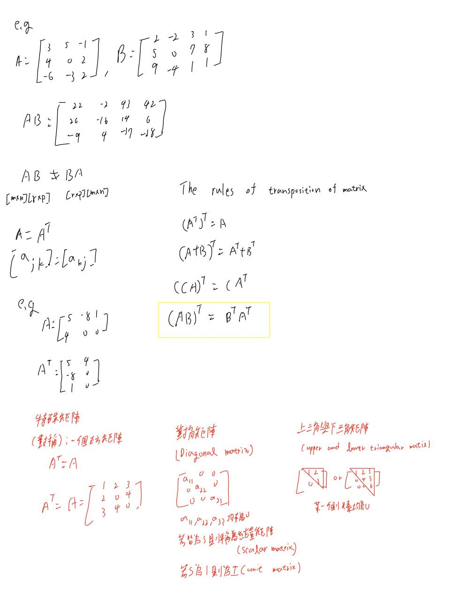
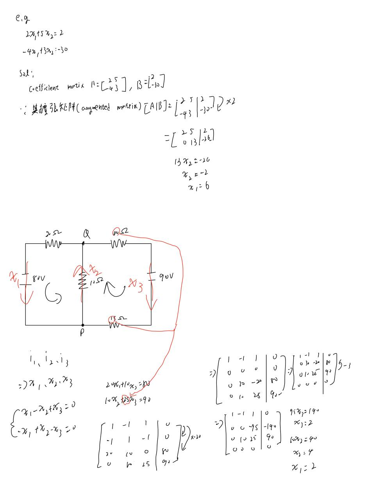
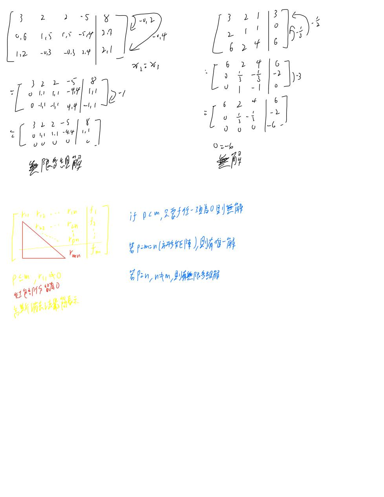
馬上練
1. $A=\begin{bmatrix}1&2\\3&4\end{bmatrix}$、$B=\begin{bmatrix}0&1\\1&0\end{bmatrix}$，求 $AB$ 與 $BA$。
$AB=\begin{bmatrix}2&1\\4&3\end{bmatrix}$、$BA=\begin{bmatrix}3&4\\1&2\end{bmatrix}$。兩者不同 ⇒ 再用一個例子確認「矩陣乘法不能交換」。
2. 用列運算解 $\begin{cases}x+y+z=6\\2x-y+z=3\\x+2y-z=2\end{cases}$
增廣矩陣：$\begin{bmatrix}1&1&1&\vline&6\\2&-1&1&\vline&3\\1&2&-1&\vline&2\end{bmatrix}$。做 $\text{R}_2-2\text{R}_1$、$\text{R}_3-\text{R}_1$ 得 $\begin{bmatrix}1&1&1&\vline&6\\0&-3&-1&\vline&-9\\0&1&-2&\vline&-4\end{bmatrix}$，再 $\text{R}_3+\frac13\text{R}_2$ 得 $\begin{bmatrix}1&1&1&\vline&6\\0&-3&-1&\vline&-9\\0&0&-\frac73&\vline&-7\end{bmatrix}$ ⇒ $z=3$、$-3y-3=-9\Rightarrow y=2$、$x+2+3=6\Rightarrow x=1$。
回代三式：$1+2+3=6$ ✓、$2(1)-2+3=3$ ✓、$1+2(2)-3=2$ ✓ 三條都對。所以 $x=1,\ y=2,\ z=3$。
14線性獨立與秩 原稿 p.20
「秩」是在問：這個矩陣裡，有幾列（或幾行）是真正「獨立」的資訊？重複的、可以組合出來的都不算。
秩＝「這個矩陣裡有幾條真正獨立的資訊」。其他列都只是別人的組合，刪掉也不會少任何訊息——所以 $3\times3$ 的矩陣，秩可能只有 2。
考慮一組向量 $\vec a_1,\vec a_2,\dots,\vec a_n$，把它們配係數相加：
$$c_1\vec a_1+c_2\vec a_2+\cdots+c_n\vec a_n=\vec 0$$- 若只有 $c_1=c_2=\cdots=c_n=0$ 才能讓它成立 ⇒ 這組向量線性獨立（linearly independent）。
- 若有不全為零的係數也能讓它成立 ⇒ 線性相關（linearly dependent），也就是「其中至少有一個向量是多餘的，可以別人的組合做出來」。
白話：獨立＝每支箭都提供了新方向；相關＝有一支箭只是別人的合成，拿掉也不損失資訊。
定義：矩陣的 Rank ＝ 它裡面「線性獨立的列向量」的最大個數，記作 $\operatorname{Rank}A$。因為可以證明「獨立列的個數」跟「獨立行的個數」永遠相等，所以：
$$\operatorname{Rank}A=\operatorname{Rank}A^T\qquad(\text{原稿右下角的 } \operatorname{Rank}A^T=\operatorname{Rank}A)$$- 若 $A=0$（全零矩陣）則 $\operatorname{Rank}A=0$；否則 $\operatorname{Rank}A\ge1$。
- $\operatorname{Rank}A\le\min(m,n)$（$m\times n$ 矩陣最多就只能有 $\min(m,n)$ 個獨立方向）。
- 實用算法：做列運算化成「階梯型」，數一數留下幾個非零列就是秩（列運算不會改變秩）。
思路
- 目標：用列運算把第一行（除第一列外）全部消成 0，這樣就能一眼看出哪些列是多餘的。
- $\text{R}_2+2\text{R}_1$（因為 $-6+2\times3=0$）：得 $[0,\ 42,\ 28\mid58]$。
- $\text{R}_3-7\text{R}_1$（因為 $21-7\times3=0$）：得 $[0,\ -21,\ -14\mid1]$。
- 觀察剩下的兩列：$[0,42,28]$ 與 $[0,-21,-14]$，後者＝前者乘 $(-\frac12)$ ⇒ 它們是同一條資訊，只有一個是獨立的。
- 加上第一列，共有 2 個獨立列 ⇒ $\operatorname{Rank}A=2$（雖然 $A$ 是 $3\times3$，但「有效資訊」只有 2 維）。
注意係數那兩列成比例（$42:28$ vs $-21:-14$），但常數那一欄不成比例（$58$ vs $1$，比例的結果應該是 $-29$）。這代表方程組本身是矛盾的 ⇒ 無解。這就是「用秩判斷解的存在性」：$\operatorname{Rank}A<\operatorname{Rank}[A\mid\vec B]$ ⇒ 無解。
思路
- 先看有沒有「一看就成比例」的列：第 2 列 $[2,4,6]$ 正好是第 1 列 $[1,2,3]$ 的 2 倍 ⇒ 第 2 列是多餘的。
- 第 3 列 $[0,1,1]$ 跟第 1 列不成比例（$0:1:1$ vs $1:2:3$） ⇒ 它提供新資訊。
- 所以獨立列有 2 個 ⇒ $\operatorname{Rank}A=2$。
- 因為「獨立行個數 ＝ 獨立列個數」，所以轉置後仍舊是 2：$\operatorname{Rank}A^T=2$。
（驗證一下行：$A$ 的三行是 $(1,2,0),(2,4,1),(3,6,1)$，第三行＝第一行＋第二行？$(1+2,2+4,0+1)=(3,6,1)$ ✓ 所以獨立行也正好是 2 個。）
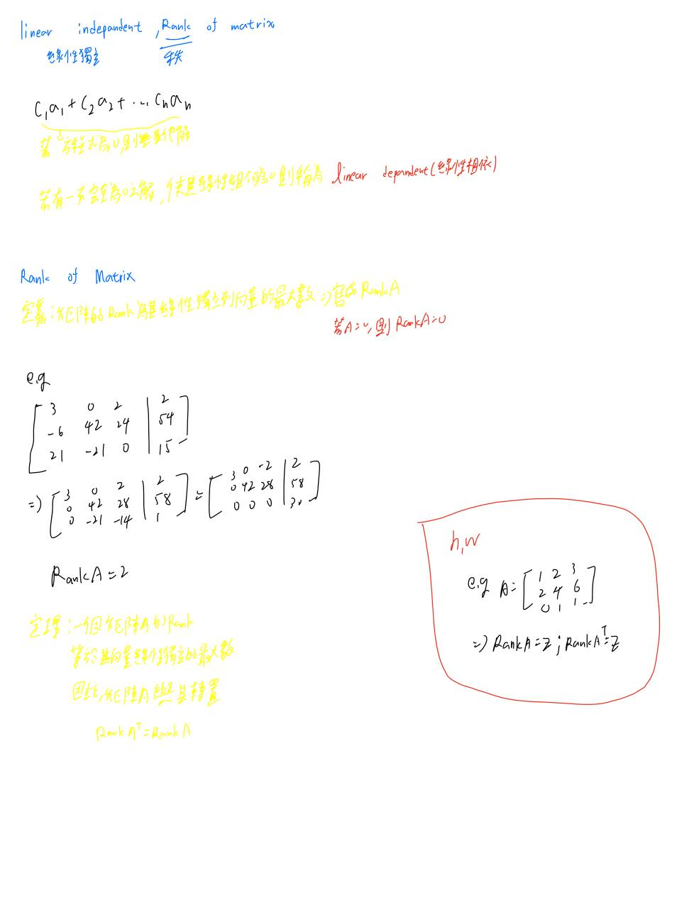
15行列式（）原稿 p.21
行列式是把一個方陣壓縮成一個數字。這個數字的功能：判斷方程組有沒有唯一解（$\det A\ne0$）、算面積／體積、算反矩陣與克拉瑪公式。
行列式把一個方陣壓成一個數字，這個數字回答一個問題：「這個系統被壓扁了嗎？」等於 0 就是被壓扁（沒有唯一解）；不等於 0 就還有救。
只有方陣（$n\times n$）才有行列式，記作 $\det A$ 或 $D$。
$$n=1:\ D=\det A=a_{11}\qquad\qquad n=2:\ D=\begin{vmatrix}a_{11}&a_{12}\\a_{21}&a_{22}\end{vmatrix}=a_{11}a_{22}-a_{12}a_{21}$$$2\times2$ 的口訣：「主對角相乘 減 副對角相乘」。
先把兩個名詞分清楚：
- Minor $M_{jk}$（子行列式）：把第 $j$ 列、第 $k$ 行整條刪掉，剩下的 $(n-1)\times(n-1)$ 行列式。
- Cofactor $C_{jk}$（餘因子）：把 minor 加上正負號，$C_{jk}=(-1)^{j+k}M_{jk}$。
然後任選一列（或一行）展開：
$$D=\sum_{k=1}^{n}(-1)^{j+k}a_{jk}M_{jk}=\sum_{k=1}^{n}a_{jk}C_{jk}\qquad(\text{固定第 } j \text{ 列})$$正負號怎麼決定？ 原稿畫的那個「棋盤」就是答案：
$$\begin{array}{ccc}+&-&+\\-&+&-\\+&-&+\end{array}\qquad\text{（左上角永遠是 } +\text{，像西洋棋盤一樣交替）}$$選哪一列展開？ 選0 最多的那一列（或行）——因為乘 0 的項可以直接不理它。這一個小技巧能省掉一半計算。
思路
- 先掃一眼哪一列／行最多 0：第一列有 0、第一行也有 0。這裡照原稿選第一列。
- 展開三項，每項都是「元素 × 對應的 2×2 子行列式 × 正負號」。第一列的正負號是 $+,-,+$。
- 第一項：$1\times\begin{vmatrix}6&4\\0&2\end{vmatrix}$（刪掉第 1 列第 1 行後剩下 $6,4$ 與 $0,2$）$=1\times(12-0)=12$。
- 第二項：$-3\times\begin{vmatrix}2&4\\-1&2\end{vmatrix}$（刪掉第 1 列第 2 行）$=-3\times(4+4)=-3\times8=-24$。
- 第三項：$+0\times(\dots)=0$——遇到 0 就直接跳過，不要白算。
- 合計 $12-24+0=-12$。
① 第二項的減號是「棋盤」給的，不是因為 $-3$ 而來的，抄式子時很容易漏。② 展開時可以用另一列或另一行試試看，答案一定一樣（這是最好的自我檢查）。③ $2\times2$ 的行列式算的是平行四邊形面積、$3\times3$ 算的是平行六面體體積——行列式為 0 就代表「壓扁了」（向量線性相關），這就是為什麼 $\det A=0$ 時方程組沒有唯一解。
- 方程組若有兩個以上的解（也就是有解、且不只一組）⇒ 必然有無限多組解（不可能「剛好兩組」）。
- 若 $\det A\ne0$ ⇒ 恰有一組解（唯一解）；這也是克拉瑪公式與反矩陣的前提。
- 若 $\det A=0$ ⇒ 沒有唯一解：可能無解、也可能無限多組解（要靠列運算才能確定是哪一種）。
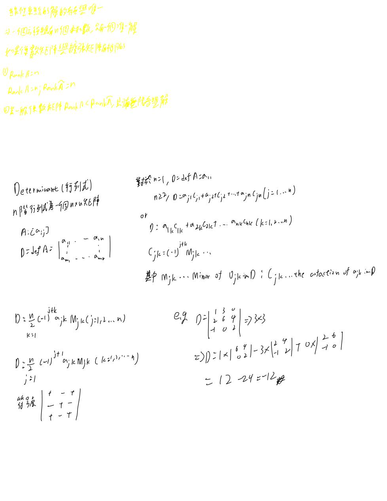
16克拉瑪公式（）原稿 p.22 上半
只要 $\det A\ne0$，方程組的解可以用「兩個行列式相除」直接寫出來——不必做列運算。
只需要其中一個未知數時的超快解法：把對應那一行換成常數，算兩個行列式相除。分母都是同一個 $\det A$，只有分子在換行。
規律（一定要抓到）：分母永遠是 $\det A$；求 $x_1$ 時，把 $A$ 的第 1 行換成常數向量 $\vec b$；求 $x_2$ 時換第 2 行。「求哪個未知數，就換那一行」。
看出規律了嗎？把第 1 行換成 $\vec b$ 就是 $x_1$、換第 2 行就是 $x_2$、換第 3 行就是 $x_3$。原稿在分子第一個行列式上圈了紅圈，就是提醒你「換掉的那一行在哪裡」。
思路
- 先寫 $A$、$\vec b$，並算 $\det A=2(3)-5(-4)=6+20=26$。$\det A\ne0$ ⇒ 可以放心用克拉瑪。
- 求 $x_1$：把 $A$ 的第一行換成 $\vec b=(2,-30)$ ⇒ $\begin{vmatrix}2&5\\-30&3\end{vmatrix}=6+150=156$，再除以 26 ⇒ $x_1=6$。
- 求 $x_2$：把第二行換成 $\vec b$ ⇒ $\begin{vmatrix}2&2\\-4&-30\end{vmatrix}=-60+8=-52$，除以 26 ⇒ $x_2=-2$。
- 和例題 25 的列運算結果完全一致 ✓（兩種方法都可以，考試時看哪個快）。
克拉瑪公式的限制：① 必須是「方程式條數 ＝ 未知數個數」（方陣）；② 必須 $\det A\ne0$。
它的優點：只要一個未知數時超快（不用整組解完）。缺點：$n$ 大時計算量爆炸（每個未知數都要算一個 $n$ 階行列式），實務上會改用列運算或反矩陣。
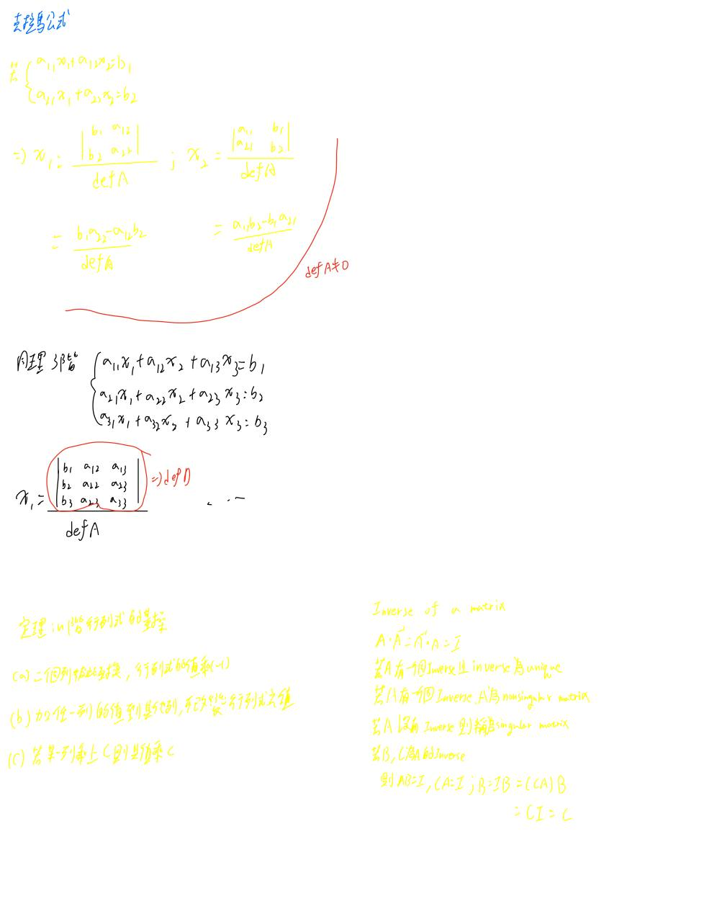
17反矩陣（）原稿 p.22 下半 – p.23
矩陣世界的「倒數」。有了它，方程組 $A\vec x=\vec B$ 就能像國中一樣「兩邊同除以 $A$」：$\vec x=A^{-1}\vec B$。
反矩陣就是矩陣界的「倒數」。$A\vec x=\vec B$ 兩邊同乘 $A^{-1}$ 得到 $\vec x=A^{-1}\vec B$——跟國中解 $3x=6$ 時「兩邊同除以 3」是完全一樣的動作。
- 若這個 $A^{-1}$ 存在，它是唯一的（unique）。
- 若不存在 ⇒ 稱 $A$ 為 singular matrix（奇異矩陣）；存在則叫 nonsingular。判準很簡單：$\det A=0$ ⇔ singular（沒有反矩陣）。
- 只有方陣才可能談反矩陣。
- 乘積的反矩陣要反序：若 $A,B$ 都可逆，則 $(AB)^{-1}=B^{-1}A^{-1}$（原稿右下那段）。口訣：脫鞋子先脫襪子——跟 $(AB)^T=B^TA^T$ 一樣要換順序。
在 $A$ 的右邊接上單位矩陣，形成 $[A\mid I]$，然後做列運算，把左半邊變成 $I$：
$$[\,A\mid I\,]\ \xrightarrow{\ \text{列運算}\ }\ [\,I\mid A^{-1}\,]$$為什麼這樣就對？ 因為「把 $A$ 變成 $I$ 的那一串列運算」整體效果就等於「左乘 $A^{-1}$」；把同一串運算也套在 $I$ 上，$I$ 就變成 $A^{-1}$。關鍵：右半邊的 $I$ 是拿來「記錄」你做了哪些運算的。
思路
- 先把 $[A\mid I]$ 寫出來：左半是 $A$，右半是 $I=\begin{bmatrix}1&0&0\\0&1&0\\0&0&1\end{bmatrix}$。
- 第一步把左半第一行（除了左上角）清成 0：$\text{R}_2+3\text{R}_1$、$\text{R}_3-\text{R}_1$。得到左半 $\begin{bmatrix}-1&1&2\\0&2&7\\0&2&2\end{bmatrix}$。
（檢查：$[3,-1,1]+3[-1,1,2]=[0,2,7]$ ✓） - 繼續用同樣的手法把左半化簡成單位矩陣——每一步都同時對右半做一樣的事。
- 左半變成 $I$ 時，右半就是答案。原稿算出：
把答案拿去乘 $A$，看是不是 $I$。例如第一列乘第一行：$(-0.7)(-1)+(0.2)(3)+(0.3)(-1)=0.7+0.6-0.3=1$ ✓；第一列乘第二行：$(-0.7)(1)+(0.2)(-1)+(0.3)(3)=-0.7-0.2+0.9=0$ ✓。只要一個位置的「1」或「0」不對，就是中途算錯了——這個檢查只要一分鐘，卻能救回一整題的分數。
另外：原稿過程中有幾處中間數字是自己重算時的暫存值（紅筆畫掉重寫），自己動手時不要試著「抄」中間那幾步，照著「一次清一行的 0」的節奏做就不會亂。
- 解方程組：$A\vec x=\vec B\Rightarrow\vec x=A^{-1}\vec B$（例題 22 那組解 $\vec x=[3,\frac12,-1]^T$ 就可以這樣得到）。
- 公式（$2\times2$ 超好用）：$\begin{bmatrix}a&b\\c&d\end{bmatrix}^{-1}=\dfrac{1}{ad-bc}\begin{bmatrix}d&-b\\-c&a\end{bmatrix}$。記法：主對角交換、副對角變號、除以行列式。
- 用 $2\times2$ 公式檢查上面：若 $A$ 是 $2\times2$ 且 $\det A=0$，公式會除以 0 ⇒ 正好對應「singular 沒有反矩陣」。
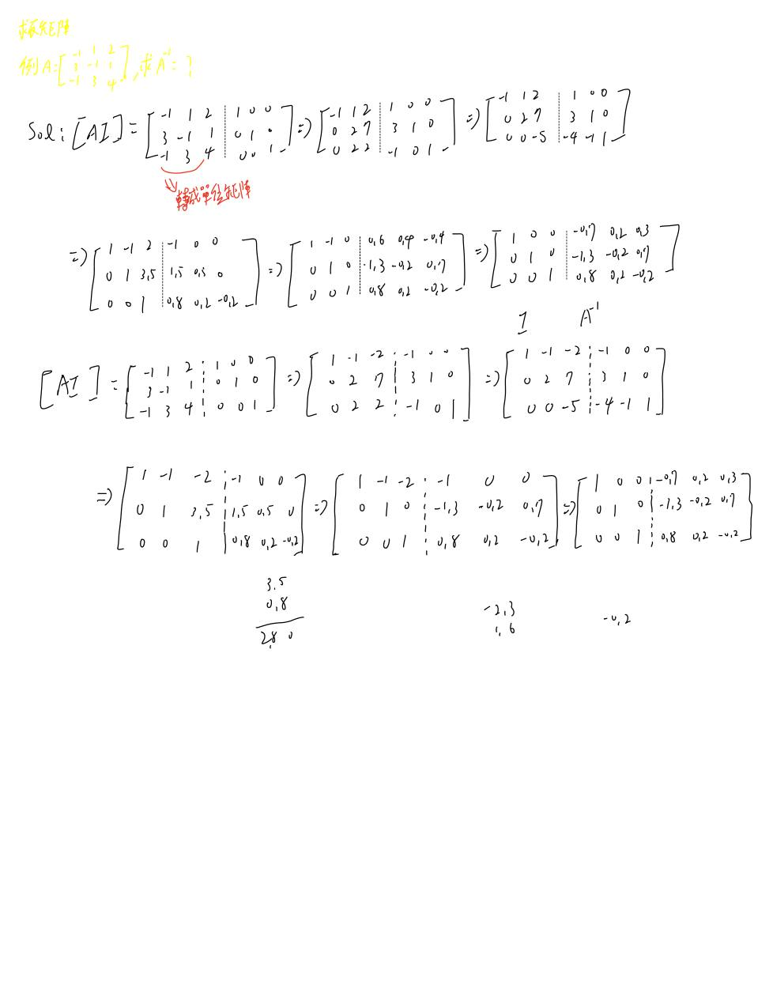
馬上練
1. 求 $\begin{bmatrix}2&1\\5&3\end{bmatrix}^{-1}$。
$\det=2(3)-1(5)=1$，所以 $A^{-1}=\frac11\begin{bmatrix}3&-1\\-5&2\end{bmatrix}=\begin{bmatrix}3&-1\\-5&2\end{bmatrix}$。驗算：$\begin{bmatrix}2&1\\5&3\end{bmatrix}\begin{bmatrix}3&-1\\-5&2\end{bmatrix}=\begin{bmatrix}1&0\\0&1\end{bmatrix}$ ✓
2. $\begin{bmatrix}1&2\\2&4\end{bmatrix}$ 有反矩陣嗎？
$\det=4-4=0$ ⇒ singular，沒有反矩陣。（第二列是第一列的 2 倍，資訊重複 ⇒ 無法還原。）
EN術語中英對照互動查詢
讀原文書、看國外課程影片時會撞到的英文字都在這一頁。上面的章節標題和各章的 English 列也都是按鈕，點一下就會跳出中文意思與一句話解釋。這裡則可以直接打字搜尋（中英都通）。
複數與四則運算
| English | 中文 | 一句話解釋 |
|---|---|---|
| complex number | 複數 | 形如 $z=x+iy$ 的數；$x$ 是實部、$y$ 是虛部。 |
| real part | 實部 | $\operatorname{Re}(z)=x$，注意它不含 $i$。 |
| imaginary part | 虛部 | $\operatorname{Im}(z)=y$，是一個實數，別寫成 $3i$。 |
| pure imaginary | 純虛數 | 實部為 0，例如 $4i$。 |
| conjugate | 共軛複數 | 把虛部的正負號反過來：$\bar z=x-iy$，幾何上是對實軸鏡射。 |
| commutative law | 交換律 | $z_1+z_2=z_2+z_1$，加法的順序不影響結果。 |
| associative law | 結合律 | $(z_1+z_2)+z_3=z_1+(z_2+z_3)$，括號可以搬。 |
| distributive law | 分配律 | $z_1(z_2+z_3)=z_1z_2+z_1z_3$，展開時用。 |
極式與歐拉公式
| English | 中文 | 一句話解釋 |
|---|---|---|
| polar form | 極式 | $z=r(\cos\theta+i\sin\theta)$，用長度與角度描述同一個點。 |
| modulus | 模（絕對值） | $|z|=r=\sqrt{x^2+y^2}$，就是箭頭的長度。 |
| argument | 輻角 | $\operatorname{Arg}z$ ＝所有合格的角度，彼此差 $2n\pi$。 |
| principal value | 主值 | 只取 $-\pi<\theta\le\pi$ 的那一個，寫成 $\arg z$。 |
| Euler's formula | 歐拉公式 | $e^{i\theta}=\cos\theta+i\sin\theta$，把指數與三角函數接起來。 |
| quadrant | 象限 | 看 $x$、$y$ 的正負決定角度落在第幾象限。 |
極式的乘除 · 棣美弗 · 方根
| English | 中文 | 一句話解釋 |
|---|---|---|
| De Moivre's theorem | 棣美弗定理 | $z^n=r^n[\cos(n\theta)+i\sin(n\theta)]$：次方＝角度乘 $n$。 |
| nth root | $n$ 次方根 | 開 $n$ 次方有 $n$ 個解，全落在半徑 $\sqrt[n]{R}$ 的圓上。 |
| roots of unity | 單位根 | $\sqrt[n]{1}$ 的 $n$ 個解，把單位圓等分成 $n$ 份。 |
| equally spaced | 等角分布 | 相鄰兩個解的角度差固定是 $2\pi/n$。 |
複變函數
| English | 中文 | 一句話解釋 |
|---|---|---|
| complex variable | 複變數 | 輸入的變數 $z$ 本身就是複數。 |
| complex function | 複變函數 | $w=f(z)$：一個 $z$ 對到一個 $w$。 |
| real / imaginary parts | 實部與虛部函數 | $w=u+iv$，$u$、$v$ 各是 $x$、$y$ 的實函數。 |
| domain / range | 定義域／值域 | 定義域是允許的 $z$，值域是跑出來的 $w$。 |
向量的運算
| English | 中文 | 一句話解釋 |
|---|---|---|
| vector | 向量 | 有大小有方向的量，記成 $[a_1,a_2,a_3]$。 |
| magnitude / norm | 大小（模） | $|\vec a|=\sqrt{a_1^2+a_2^2+a_3^2}$。 |
| unit vector | 單位向量 | $\hat a=\vec a/|\vec a|$，長度 1、方向與 $\vec a$ 相同。 |
| dot product | 內積 | $\vec a\cdot\vec b=|\vec a||\vec b|\cos\theta$，算出來是一個數。 |
| orthogonal | 正交（垂直） | $\vec a\cdot\vec b=0$ 就是互相垂直。 |
| cross product | 外積 | $\vec a\times\vec b$ 用 $3\times3$ 行列式算，結果垂直於兩者。 |
| right-hand rule | 右手定則 | 食指指 $\vec a$、中指指 $\vec b$，拇指方向就是 $\vec a\times\vec b$。 |
| parallelogram | 平行四邊形 | $|\vec a\times\vec b|$ 等於兩向量張出的平行四邊形面積。 |
| position vector | 位置向量 | $\vec r(t)=[x(t),y(t),z(t)]$，把曲線寫成向量。 |
| tangent vector | 切向量 | $\vec r'(t)$，指向曲線前進的方向。 |
| arc length | 弧長 | $L=\int_a^b|\vec r'(t)|\,dt$，把速率對時間積分。 |
梯度與方向導數
| English | 中文 | 一句話解釋 |
|---|---|---|
| scalar field | 純量場 | 每一點對應一個數，例如房間裡的溫度 $f(x,y,z)$。 |
| vector field | 向量場 | 每一點對應一支箭，例如水流速度。 |
| gradient | 梯度 | $\nabla f=[f_x,f_y,f_z]$，指向最陡上升方向。 |
| del operator | $\nabla$ 算子 | $\nabla=\frac{\partial}{\partial x}\hat i+\frac{\partial}{\partial y}\hat j+\frac{\partial}{\partial z}\hat k$，等著被餵函數。 |
| directional derivative | 方向導數 | $D_{\vec a}f=\hat a\cdot\nabla f$，往指定方向的變化率。 |
| normal vector | 法向量 | 垂直於曲面的向量；$\nabla f$ 就是它。 |
| level surface | 等值面 | $f(x,y,z)=c$ 的曲面，$\nabla f$ 與它垂直。 |
| chain rule | 連鎖律 | $\frac{d}{dt}f(\vec r(t))=\nabla f\cdot\vec r'$，是法向量定理的關鍵。 |
散度 · 旋度 · Laplacian
| English | 中文 | 一句話解釋 |
|---|---|---|
| divergence | 散度 | $\nabla\cdot\vec v$：每點「往外冒」多少，結果是純量。 |
| curl | 旋度 | $\nabla\times\vec v$：每點「打轉」多少，結果是向量。 |
| Laplacian | 拉普拉斯算子 | $\nabla^2=\operatorname{div}(\operatorname{grad})$，二階偏導數的和。 |
| incompressible | 不可壓縮 | $\nabla\cdot\vec v=0$，代表既沒有源也沒有匯。 |
| source / sink | 源／匯 | 散度為正是源（水龍頭），為負是匯（排水孔）。 |
線積分
| English | 中文 | 一句話解釋 |
|---|---|---|
| line integral | 線積分 | 沿曲線把 $\vec F\cdot d\vec r$ 一小段一小段加起來。 |
| parametrization | 參數化 | 把路徑寫成 $\vec r(t)$，並決定 $t$ 的範圍。 |
| conservative field | 保守場 | 可以寫成某個 $\nabla f$ 的向量場。 |
| potential function | 位勢函數 | 那個 $f$；線積分只要算頭尾位勢差。 |
| path independence | 路徑無關 | 走哪條路都一樣，只看起點與終點。 |
| circulation | 環流 | 沿封閉曲線繞一圈的線積分 $\oint_C\vec F\cdot d\vec r$。 |
| work | 功 | 物理上線積分就是力沿路徑所做的功。 |
格林定理
| English | 中文 | 一句話解釋 |
|---|---|---|
| Green's theorem | 格林定理 | $\oint_C(F_1dx+F_2dy)=\iint_R\left(\frac{\partial F_2}{\partial x}-\frac{\partial F_1}{\partial y}\right)dA$。 |
| simple closed curve | 簡單封閉曲線 | 不自我交叉、頭尾相接的曲線。 |
| counterclockwise | 逆時針（正向） | 格林定理要求的邊界方向；反向要變號。 |
| double integral | 雙重積分 | 對平面區域做兩次積分。 |
| boundary | 邊界 | 區域 $R$ 的邊界曲線 $C$。 |
座標系與表面積分
| English | 中文 | 一句話解釋 |
|---|---|---|
| cylindrical coordinates | 柱（圓柱）座標 | $(\rho,\varphi,z)$，體積元素 $dV=\rho\,d\rho\,d\varphi\,dz$。 |
| spherical coordinates | 球座標 | $(r,\theta,\varphi)$，體積元素 $dV=r^2\sin\theta\,dr\,d\theta\,d\varphi$。 |
| surface integral | 表面積分 | 在曲面上積分，需要面積元素 $dA$。 |
| area element | 面積元素 | 曲面上的一小塊面積，例如 $\sqrt{1+g_x^2+g_y^2}\,dxdy$。 |
| volume element | 體積元素 | 換座標後出現的比例因子乘積。 |
| scaling factor | 比例因子 | 球座標多了 $r^2\sin\theta$、柱座標多了 $\rho$ 的那個因子。 |
| normal derivative | 法向導數 | $\frac{\partial f}{\partial n}=\nabla f\cdot\hat n$，沿外法線方向的變化率。 |
高斯散度定理
| English | 中文 | 一句話解釋 |
|---|---|---|
| divergence theorem | 散度定理 | $\iint_S\vec F\cdot\hat n\,dA=\iiint_T\nabla\cdot\vec F\,dV$，也叫高斯定理。 |
| flux | 通量 | 穿過表面的總流量。 |
| closed surface | 封閉曲面 | 像球面、圓柱面這種密閉的曲面。 |
| triple integral | 三重積分 | 對體積做三次積分。 |
| outward normal | 外法向量 | 朝曲面外面的單位法向量 $\hat n$。 |
斯托克斯定理
| English | 中文 | 一句話解釋 |
|---|---|---|
| Stokes' theorem | 斯托克斯定理 | $\oint_C\vec F\cdot d\vec r=\iint_S(\nabla\times\vec F)\cdot\hat n\,dA$。 |
| curl flux | 旋度通量 | 曲面上的旋度通量，就是右邊那個面積分。 |
| orientation | 方向（定向） | 曲面法向量與邊界繞向要符合右手定則。 |
| boundary curve | 邊界曲線 | 曲面 $S$ 的邊界 $C$。 |
矩陣與線性方程組
| English | 中文 | 一句話解釋 |
|---|---|---|
| matrix | 矩陣 | 把數字排成長方形再加括號。 |
| entry / element | 元素 | $a_{jk}$：第 $j$ 列第 $k$ 行的數字。 |
| row / column | 列／行 | 列是橫的（row）、行是直的（column）。 |
| coefficient matrix | 係數矩陣 | $A$，把所有未知數的係數排起來。 |
| augmented matrix | 增廣矩陣 | $[A\mid B]$，把常數項也併進同一張表。 |
| transpose | 轉置 | $A^{T}$：列變行、行變列。 |
| symmetric matrix | 對稱矩陣 | $A^{T}=A$，沿對角線對折會重合。 |
| diagonal matrix | 對角矩陣 | 非對角線元素全是 0。 |
| identity matrix | 單位矩陣 | $I$：對角線是 1、其餘是 0，矩陣界的 1。 |
| row operation | 列運算 | 互換、乘非零常數、加另一列的倍數，都不改變解。 |
| Gaussian elimination | 高斯消去法 | 用列運算把方程組化到階梯型再回代。 |
| inconsistent | 不一致（無解） | 消去後出現 $0=$ 非零的矛盾列。 |
| scalar multiplication | 純量乘法 | $cA$：每個元素都乘 $c$。 |
線性獨立與秩
| English | 中文 | 一句話解釋 |
|---|---|---|
| linear independence | 線性獨立 | 只有係數全為 0 才能組出零向量。 |
| linear dependence | 線性相關 | 有不全為 0 的係數也能組出零向量。 |
| rank | 秩 | 線性獨立列（或行）的最大個數。 |
| row echelon form | 列階梯形 | 左上往右下排成階梯狀，方便數秩。 |
| pivot | 樞元（主元） | 階梯型中每一列的第一個非零元素。 |
行列式
| English | 中文 | 一句話解釋 |
|---|---|---|
| determinant | 行列式 | 把方陣壓縮成的一個數，記作 $\det A$。 |
| minor | 子行列式 | 刪掉某列某行後剩下的行列式 $M_{jk}$。 |
| cofactor | 餘因子 | $C_{jk}=(-1)^{j+k}M_{jk}$，就是加了正負號的 minor。 |
| cofactor expansion | 餘因子展開 | 沿一列（或一行）展開來算高階行列式。 |
| sign pattern | 符號棋盤 | $+$、$-$ 交替的記號表，左上角永遠是 $+$。 |
| singular | 奇異 | $\det A=0$，沒有反矩陣。 |
克拉瑪公式
| English | 中文 | 一句話解釋 |
|---|---|---|
| Cramer's rule | 克拉瑪公式 | $x_k$＝（把第 $k$ 行換成 $\vec b$ 的行列式）$\div\det A$。 |
| unique solution | 唯一解 | $\det A\ne0$ 時恰有一組解。 |
| numerator / denominator | 分子／分母 | 分子是換過行的行列式，分母是 $\det A$。 |
反矩陣
| English | 中文 | 一句話解釋 |
|---|---|---|
| inverse matrix | 反矩陣 | $A^{-1}$，滿足 $AA^{-1}=A^{-1}A=I$。 |
| nonsingular | 非奇異 | $\det A\ne0$，所以有反矩陣。 |
| Gauss–Jordan elimination | 高斯－喬登消去法 | $[A\mid I]\to[I\mid A^{-1}]$ 的列運算流程。 |
| unique | 唯一的 | 反矩陣若存在，只會有一個。 |
| verify | 驗算 | 把答案乘回去，確認得到 $I$。 |
＋公式總表 · 考前速記附錄
這一頁是把 23 頁原稿裡「一定會用到的式子」集中起來。考前只看這一頁複習。
① 複數（第 1–3 章）
| 項目 | 式子 |
|---|---|
| 複數與 i | $i=\sqrt{-1}$，$i^2=-1$；$z=x+iy$ |
| 加／乘 | $(a+bi)(c+di)=(ac-bd)+(ad+bc)i$ |
| 除法（有理化） | $\dfrac{z_1}{z_2}=\dfrac{z_1\bar z_2}{z_2\bar z_2}$，$z\bar z=x^2+y^2$ |
| 實部／虛部用共軛表示 | $\operatorname{Re}z=\dfrac{z+\bar z}{2}$，$\operatorname{Im}z=\dfrac{z-\bar z}{2i}$ |
| 模與極式 | $|z|=r=\sqrt{x^2+y^2}$，$z=r(\cos\theta+i\sin\theta)=re^{i\theta}$ |
| 歐拉公式 | $e^{i\theta}=\cos\theta+i\sin\theta$ |
| 乘／除／次方 | $z_1z_2=r_1r_2e^{i(\theta_1+\theta_2)}$；$\frac{z_1}{z_2}=\frac{r_1}{r_2}e^{i(\theta_1-\theta_2)}$；$z^n=r^ne^{in\theta}$ |
| n 次方根 | $\sqrt[n]{z}=\sqrt[n]{r}\left[\cos\frac{\theta+2k\pi}{n}+i\sin\frac{\theta+2k\pi}{n}\right]$，$k=0,\dots,n-1$（$n$ 個解） |
| 夾角／模的性質 | $\cos\theta=\dfrac{\vec a\cdot\vec b}{|\vec a||\vec b|}$（向量用）；$|z_1z_2|=|z_1||z_2|$ |
② 向量（第 5 章）
| 項目 | 式子 |
|---|---|
| 由兩點求向量 | $\overrightarrow{PQ}=Q-P$；$|\vec a|=\sqrt{a_1^2+a_2^2+a_3^2}$ |
| 單位向量 | $\hat a=\dfrac{\vec a}{|\vec a|}$ |
| 內積 | $\vec a\cdot\vec b=a_1b_1+a_2b_2+a_3b_3=|\vec a||\vec b|\cos\theta$ |
| 正交條件 | $\vec a\perp\vec b\iff\vec a\cdot\vec b=0$ |
| 外積 | $\vec a\times\vec b=\begin{vmatrix}\hat i&\hat j&\hat k\\a_1&a_2&a_3\\b_1&b_2&b_3\end{vmatrix}$；$|\vec a\times\vec b|=|\vec a||\vec b|\sin\theta$（平行四邊形面積） |
| 弧長 | $L=\int_a^b|\vec r'(t)|\,dt$ |
③ 向量微積分（第 6–7 章）
| 項目 | 式子 | 一句話 |
|---|---|---|
| 梯度 | $\nabla f=\left[\frac{\partial f}{\partial x},\frac{\partial f}{\partial y},\frac{\partial f}{\partial z}\right]$ | 最陡上升方向（向量） |
| 方向導數 | $D_{\vec a}f=\hat a\cdot\nabla f$ | 往指定方向的變化率（數） |
| 梯度＝法向量 | $f=c$ 的曲面法向 $\parallel\nabla f$；$\hat n=\pm\frac{\nabla f}{|\nabla f|}$ | 求切平面、通量都要用 |
| 散度 | $\nabla\cdot\vec v=\frac{\partial v_1}{\partial x}+\frac{\partial v_2}{\partial y}+\frac{\partial v_3}{\partial z}$ | 冒出量（數） |
| 旋度 | $\nabla\times\vec v=\begin{vmatrix}\hat i&\hat j&\hat k\\ \partial_x&\partial_y&\partial_z\\ v_1&v_2&v_3\end{vmatrix}$ | 打轉量（向量） |
| Laplacian | $\nabla^2f=\operatorname{div}(\operatorname{grad}f)=\frac{\partial^2f}{\partial x^2}+\frac{\partial^2f}{\partial y^2}+\frac{\partial^2f}{\partial z^2}$ | 梯度的散度 |
| 兩個必背的 0 | $\nabla\times(\nabla f)=\vec0$；$\nabla\cdot(\nabla\times\vec v)=0$ | 「梯度的旋度＝0」是判斷保守場最快的工具 |
④ 三大積分定理（第 9、11、12 章）
| 定理 | 公式 | 換掉什麼 |
|---|---|---|
| 格林 | $\oint_C(F_1dx+F_2dy)=\iint_R(\partial_xF_2-\partial_yF_1)dxdy$ | 平面邊界線積分 ↔ 平面積分 |
| 高斯（散度） | $\iint_S\vec F\cdot\hat n\,dA=\iiint_T\nabla\cdot\vec F\,dV$ | 封閉曲面通量 ↔ 體積分 |
| 斯托克斯 | $\oint_C\vec F\cdot d\vec r=\iint_S(\nabla\times\vec F)\cdot\hat n\,dA$ | 邊界環流 ↔ 曲面旋度通量 |
| 法向導數版（p.13） | $\iint_R\nabla^2f\,dA=\oint_C\frac{\partial f}{\partial n}\,ds$ | Laplacian 面積分 ↔ 法向導數線積分 |
⑤ 座標系與體積元素（第 10–11 章）
| 座標 | 轉換 | $dV$／$dA$ |
|---|---|---|
| 柱座標 $(\rho,\varphi,z)$ | $x=\rho\cos\varphi,\ y=\rho\sin\varphi,\ z=z$ | $dV=\rho\,d\rho\,d\varphi\,dz$ |
| 球座標 $(r,\theta,\varphi)$ | $x=r\sin\theta\cos\varphi,\ y=r\sin\theta\sin\varphi,\ z=r\cos\theta$ | $dV=r^2\sin\theta\,dr\,d\theta\,d\varphi$ |
| 曲面 $z=g(x,y)$ | — | $dA=\sqrt{1+g_x^2+g_y^2}\,dxdy$ |
⑥ 線性代數（第 13–17 章）
| 項目 | 式子／規則 |
|---|---|
| 矩陣乘法尺寸 | $[m\times n][n\times p]=[m\times p]$；$AB\ne BA$ |
| 轉置規則 | $(A^T)^T=A$，$(A+B)^T=A^T+B^T$，$(AB)^T=B^TA^T$（要換序） |
| 行列式 | $n=2$：$a_{11}a_{22}-a_{12}a_{21}$；$n\ge3$：$\sum_k(-1)^{j+k}a_{jk}M_{jk}$（餘因子展開） |
| 克拉瑪 | $x_k=\dfrac{\det(A\text{ 的第 }k\text{ 行換成 }\vec b)}{\det A}$，$\det A\ne0$ |
| 反矩陣定義 | $AA^{-1}=A^{-1}A=I$；$\det A=0\Rightarrow$ 不存在（singular） |
| $2\times2$ 反矩陣 | $\begin{bmatrix}a&b\\c&d\end{bmatrix}^{-1}=\frac{1}{ad-bc}\begin{bmatrix}d&-b\\-c&a\end{bmatrix}$ |
| 反矩陣求法 | $[A\mid I]\ \to\ [I\mid A^{-1}]$ |
| 解的存在性 | $\operatorname{Rank}A<\operatorname{Rank}[A\mid\vec B]\Rightarrow$ 無解；$p=n$ ⇒ 唯一解；$p |
原稿全部例題速查表
| 原稿頁 | 題目主題 | 答案 |
|---|---|---|
| p.1 | 複數：Re／Im／加／乘 | $17+i$；$78+11i$ |
| p.1 | 複數除法（有理化） | $\frac{66}{85}+\frac{43}{85}i$ |
| p.1 | 用共軛求虛部 | $\operatorname{Im}=3$ |
| p.2 | $1+i$ 的極式 | $\sqrt2\,e^{i\pi/4}$ |
| p.3 | $\sqrt[3]{1}$ | $1,\ -\frac12\pm\frac{\sqrt3}{2}i$ |
| p.3 | $\sqrt i$ 與 $\sqrt[5]{1}$ | $\pm(\frac{\sqrt2}{2}+\frac{\sqrt2}{2}i)$；$e^{i2k\pi/5}$ |
| p.4 | $w=z^2+3z$ 在 $z=1+3i$ | $-5+15i$（原稿筆誤 $1+15i$） |
| p.4 | $\overrightarrow{PQ}$，$P(4,0,2),Q(6,-1,2)$ | $(2,-1,0)$，$\sqrt5$ |
| p.4 | 向量加法（分量／$\hat i\hat j\hat k$） | $[6,5,\frac43]$；$[6,-4,\frac43]$ |
| p.5 | 內積、模、夾角 | $-1$；$\sqrt5,\sqrt{14}$；$96.9^\circ$ |
| p.5 | 外積 | $(0,0,-3)$ |
| p.7 | 方向導數 | $\frac{2}{\sqrt6}$（原稿誤寫 $\sqrt5$） |
| p.7 | 錐面單位法向量 | $\pm[\frac{2}{\sqrt5},0,-\frac{1}{\sqrt5}]$ |
| p.9 | 旋度 $\vec v=[yz,3zx,z]$ | $[-3x,y,2z]$ |
| p.10 | 保守場線積分（$\vec F=[2x,2y,4z]$） | $16$ |
| p.10–11 | 圓弧線積分（$\vec F=[-y,-xy]$） | $\frac\pi4-\frac13\approx0.4521$ |
| p.11 | 格林定理（單位圓） | $9\pi$ |
| p.13 | $\iint\nabla^2f=\oint\partial f/\partial n$ | 推導題 |
| p.14 | 高斯散度定理（圓柱） | $\frac{5\pi a^4h}{4}$（原稿未完成） |
| p.15 | 斯托克斯定理（碗形） | $-\pi$ |
| p.16 | 寫成 $A\vec x=\vec B$ | $\vec x=[3,\frac12,-1]^T$（補充） |
| p.17 | 矩陣乘法 $AB$（$3\times3$ 與 $3\times4$） | 見例題 23 |
| p.17 | 轉置 | $A^T=\begin{bmatrix}5&4\\-8&0\end{bmatrix}$ |
| p.18 | 方程組（增廣矩陣） | $x_1=6,\ x_2=-2$ |
| p.18 | 電路三條方程式 | $(x_1,x_2,x_3)=(2,4,2)$ |
| p.19 | 無限多組解的例子 | 消去後出現 0 列 |
| p.19 | 無解的例子 | 消去後出現 $0=-6$ |
| p.20 | Rank | $\operatorname{Rank}A=2$；H.W. 也是 2 |
| p.21 | 3×3 行列式 | $-12$ |
| p.22 | 克拉瑪公式 | $x_1=6,\ x_2=-2$ |
| p.23 | 反矩陣 | $\begin{bmatrix}-0.7&0.2&0.3\\-1.3&-0.2&0.7\\0.8&0.2&-0.2\end{bmatrix}$ |
- p.4 $f(1+3i)$ 應為 $-5+15i$（原稿寫 $1+15i$）。
- p.4 向量加法第二分量 $1+(-5)=-4$（原稿寫 $-5$）。
- p.7 $|\vec a|=\sqrt6$（原稿寫 $\sqrt5$），方向導數 $\frac{2}{\sqrt6}$。
- p.10 保守場那題的位勢差要用路徑端點 $(0,0,0)\to(2,2,2)$ 算，$f$ 差為 16；$A(1,1,1)$ 只是圖上的標記點。
- p.18 電路第二條應為 $20x_1+10x_2=80$（原稿寫成 $10x_3$）。
- 複數除法：分母乘的是共軛嗎？
- 開 $n$ 次方：角度用的是 $\frac{\theta+2k\pi}{n}$ 嗎？數了 $n$ 個 解嗎？
- 方向導數：方向向量單位化了嗎？
- 求曲面法向量：有沒有把方程式整理成 $f(x,y,z)=c$ 再取 $\nabla f$？
- 散度：每個分量對自己的變數微分嗎？（$v_1$ 對 $x$）
- 旋度：$\hat j$ 那一項的負號加了嗎？
- 換座標：$dV$ 的比例因子（$\rho$ 或 $r^2\sin\theta$）補了嗎？
- 三大定理：曲面／區域是封閉的嗎？方向（正負向）對嗎？
- 矩陣相乘：$AB$ 還是 $BA$？尺寸對得上嗎？
- 算完反矩陣／方程組：回代驗算了嗎？
綜合練習（答案在下面，先自己寫）
1. 求 $\dfrac{(2+i)(3-2i)}{1+i}$。
分子：$(2+i)(3-2i)=6-4i+3i-2i^2=8-i$。再除以 $1+i$：$\frac{(8-i)(1-i)}{2}=\frac{8-8i-i+i^2}{2}=\frac{7-9i}{2}=\frac72-\frac92i$。
2. 寫出 $-1+i$ 的極式與 $(-1+i)^6$。
$r=\sqrt2$、主值輻角 $\frac{3\pi}{4}$ ⇒ $z=\sqrt2e^{i3\pi/4}$。$z^6=(\sqrt2)^6e^{i(18\pi/4)}=8e^{i9\pi/2}=8e^{i\pi/2}=8i$。
3. $f=x^2yz$，在 $P(1,2,3)$ 沿 $\vec a=[1,1,1]$ 的方向導數？
$\nabla f=[2xyz,\ x^2z,\ x^2y]$ ⇒ $\nabla f(P)=[12,3,2]$；$\hat a=\frac{1}{\sqrt3}[1,1,1]$ ⇒ $D=\frac{12+3+2}{\sqrt3}=\frac{17}{\sqrt3}\approx9.81$。
4. $\vec F=[2xy,\ x^2,\ 1]$ 是否保守？若是，求位勢函數。
$\nabla\times\vec F=(0-0,\ 0-0,\ 2x-2x)=\vec0$ ⇒ 保守。$f_x=2xy\Rightarrow f=x^2y+g(y,z)$；$f_y=x^2+g_y=x^2\Rightarrow g_y=0$；$f_z=g_z=1\Rightarrow g=z+C$。所以 $f=x^2y+z+C$。
5. 用格林定理算 $\oint_C(y^3dx+x^3dy)$，$C$ 為半徑 2 的圓。
$\partial_xF_2-\partial_yF_1=3x^2-3y^2$。用極座標：$3\int_0^{2\pi}\!\!\int_0^2(r^2\cos^2\theta-r^2\sin^2\theta)r\,dr\,d\theta=3\int_0^{2\pi}\cos2\theta\,d\theta\int_0^2r^3dr=0$（因為 $\cos2\theta$ 走一整圈積分為 0）⇒ 答案 0。
6. $A=\begin{bmatrix}1&2\\3&4\end{bmatrix}$，求 $A^{-1}$ 並解 $A\vec x=[5,11]^T$。
$\det=-2$ ⇒ $A^{-1}=\frac{1}{-2}\begin{bmatrix}4&-2\\-3&1\end{bmatrix}=\begin{bmatrix}-2&1\\1.5&-0.5\end{bmatrix}$。$\vec x=A^{-1}\vec B=\begin{bmatrix}-10+11\\7.5-5.5\end{bmatrix}=\begin{bmatrix}1\\2\end{bmatrix}$。驗算：$1+4=5$ ✓、$3+8=11$ ✓。